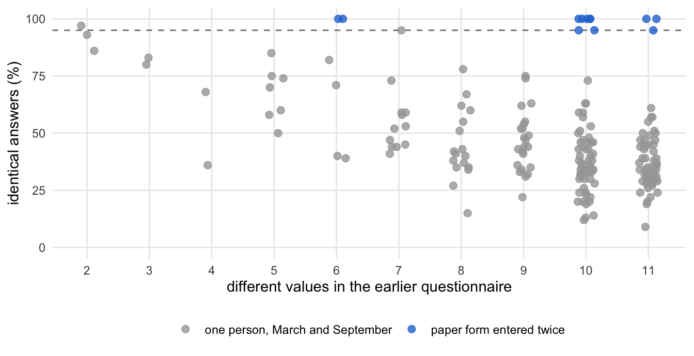
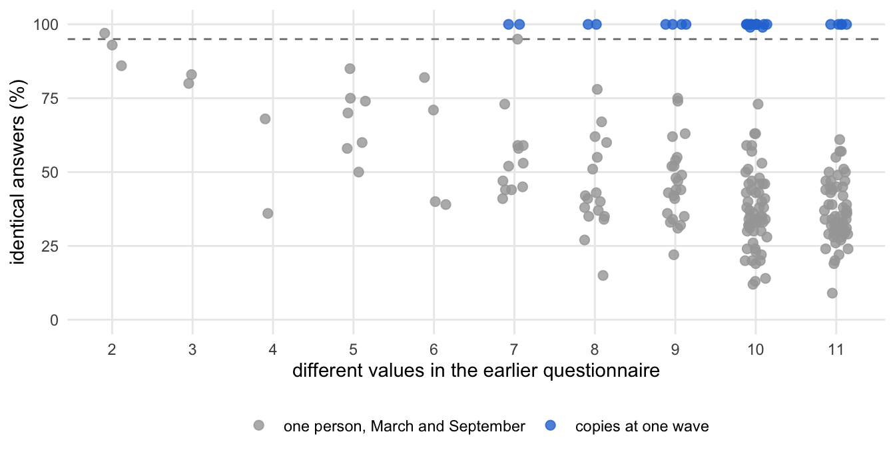
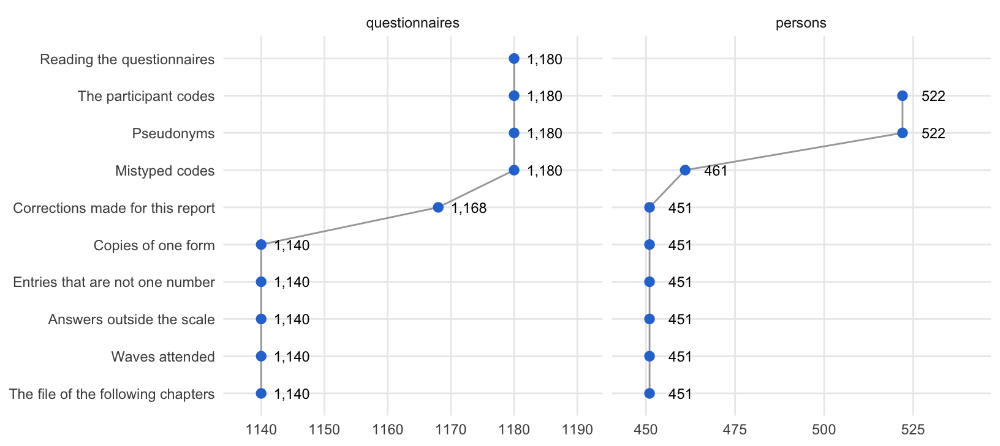

# All packages of the report, loaded once per chapter
# basic tools
library(tidyverse)
# reading the questionnaires (readxl: mariposa's read_xlsx() stops at the
# unnamed columns of the files)
library(readxl)
library(stringi)
# checking data
library(MVN)
library(careless)
library(parameters) # principal components (item scale check)
library(performance) # item scale check
# scales and reliability
library(psych)
# multilevel models
library(lme4)
library(lmerTest)
library(broom.mixed)
# latent variable models
library(lavaan)
library(semTools)
library(sirt)
# network psychometrics and item response models
library(EGAnet)
library(mirt)
# labels in figures that keep clear of each other
library(ggrepel)
# path diagrams
library(semPlot)
library(semptools)
# describing and recoding survey data, loaded last so that its rec(),
# set_na(), frequency() and describe() are the ones in use
library(mariposa)1. From Questionnaires to the Analysis File
NoteAbout this chapter
How the 79 Excel files of the municipalities become one analysis file, in ten processing steps: reading the questionnaires, building the participant codes, replacing them by pseudonyms, correcting mistyped codes, the corrections made for this report (codes joined, a code split, paper forms entered twice), keeping one questionnaire per person and wave, turning the answers into numbers, setting impossible answers to missing, marking the waves each person attended, and saving the file without the codes. Each processing step is shown in the same six steps, and every correction is listed with its evidence; a table at the end puts all processing steps side by side. Feeds the description of the sample and of data processing in the Method section, and the table of deviations from the preregistration.
Packages
All packages of the report, loaded once here (every later chapter loads the same file).
Settings
# Settings shared by all chapters
# file and municipality names carry č, š and ž: read (and sort) them in UTF-8
invisible(Sys.setlocale("LC_ALL", "en_US.UTF-8"))
# the four waves, named as in the file names (T0 to T3)
months_list <- c("January", "March", "September", "December")
# the two conditions, spelled as in the data
# trained first, January to March 2025 (experimental)
trained_first <- c("Kanjiža", "Kruševac", "Kula", "Leskovac", "NoviPazar",
"Raška", "Sokobanja", "Šid", "Užice", "Valjevo")
# trained second, September to December 2025 (wait-list control)
trained_second <- c("Arilje", "Bač", "Kikinda", "Lebane", "Pirot",
"Požarevac", "Prijepolje", "Vršac", "Šabac", "Vlasotince")
# folders
raw_dir <- "data/raw" # Excel files of the municipalities (not published)
cache_dir <- "cache" # files that later chapters load
pseudonym_file <- "data/pseudonyms.csv" # code -> pseudonym (private)
# numbers in the text: values that cannot exceed 1 (p, r, α, CFI) lose the
# leading zero, as in APA style: apa(0.2172, 3) gives ".217"
apa <- \(x, digits = 2) sub("^(-?)0\\.", "\\1.", sprintf("%.*f", digits, x))1.1 How each processing step is examined
What happens at each processing step? The same six steps in three parts, always in the same order: the problem, the rule and the result. The diagram shows the path; the list below describes each step.
flowchart TB
subgraph PROBLEM["the problem"]
direction LR
S1["<b>Step 1</b><br>what the data look like"] --> S2{{"<b>Step 2</b><br>the problem:<br>what would distort<br>the analysis?"}}
end
subgraph RULE["the rule"]
direction LR
S3["<b>Step 3</b><br>the rule,<br>one code file"] --> S4["<b>Step 4</b><br>the evidence<br>per case"]
end
subgraph RESULT["the result"]
direction LR
S5["<b>Step 5</b><br>before and after"] --> S6["<b>Step 6</b><br>what follows"]
end
PROBLEM --> RULE
RULE --> RESULT
classDef all fill:#efeff2,stroke:#8a8a8a,color:#1d1d1f
classDef verdict fill:#ffffff,stroke:#1d1d1f,color:#1d1d1f
class S1,S2,S3,S4,S5 all
class S6 verdict
style PROBLEM fill:#fafafa,stroke:#8a8a8a
style RULE fill:#fafafa,stroke:#8a8a8a
style RESULT fill:#fafafa,stroke:#8a8a8a
The six steps in detail:
The problem:
- What the data look like. The questionnaires as the processing step finds them: what the files, codes or answers hold, counted before anything changes. The step keeps a copy of this file (
…_before) for the comparison in Step 5. - The problem. What would distort the analysis if the data stayed as they are: one person counted as two, two people counted as one, one paper form counted twice, or an answer that cannot be.
The rule:
- The rule. The change, written once in a code file of its own (
R/ch01_….R) and applied to every questionnaire alike. Where a rule rests on a list of cases, the file stops with the pseudonym of any listed case that is not found exactly as listed. - The evidence per case. Every case the rule touches, one line each, with the data it rests on; the paper forms were not available. Two codes count as one person if they lie in one municipality, differ in one part of the code (the letter, the month or the day) and give the same sex and an age within a year (a birthday may fall between two waves), or if the code written a second time, at the end of the questionnaire, names the other. Two questionnaires count as copies of one paper form if they agree in at least 95 % of the answers both give, with answers that vary over the scale.
The result:
- Before and after. The questionnaires, persons and columns of the file before and after the processing step, and what changed for the cases of Step 4.
- What follows. Where the result goes next: the next processing step, the sample of Chapter 3, the screening of Chapter 4, or the case log of the finished file.
1.2 Data and tools
Which data? The 79 Excel files of the municipalities, one per municipality and wave, in the folder data/raw, and the private file that gives every participant code its pseudonym, data/pseudonyms.csv (both named in the settings above). Neither is published, as both hold the codes.
# the Excel files, without the lock files of open workbooks
questionnaire_files <- list.files(raw_dir, pattern = "\\.xlsx$") |>
str_subset("^~\\$", negate = TRUE)
length(questionnaire_files)[1] 79From the first processing step on, the questionnaires form one table, x, with one row per questionnaire; every processing step changes x and hands it to the next.
Which tools? The analysis of each step is written out. Only two summary tables and a figure that recur use small functions, defined once here:
# the questionnaires, persons and columns of the file at one point; persons
# are the codes in `code` (from 1.3) or the pseudonyms in `id` (from 1.7)
file_size <- \(data) {
persons <- select(data, any_of(c("code", "id")))
tibble(questionnaires = nrow(data),
persons = if (ncol(persons) == 1) n_distinct(persons) else NA,
columns = ncol(data))
}# one line per person: the waves, ages and sexes of their questionnaires
describe_persons <- \(data, ids) {
data |>
filter(code %in% ids) |>
summarise(waves = paste0("T", sort(unique(Occasion)), collapse = ", "),
age = paste(unique(age), collapse = "/"),
sex = paste(unique(sex), collapse = "/"),
.by = code)
}# the share of identical answers of two questionnaires against the number
# of different values in the earlier one: one person in March and in
# September (grey) beside the pairs examined (blue)
plot_agreement <- \(reference, cases, label) {
reference_label <- "one person, March and September"
bind_rows(mutate(reference, pair = reference_label),
mutate(cases, pair = label)) |>
mutate(pair = factor(pair, levels = c(reference_label, label))) |>
ggplot(aes(values, identical, colour = pair)) +
geom_hline(yintercept = 95, linetype = "dashed", colour = "grey50") +
geom_point(size = 2.2, alpha = .8,
position = position_jitter(width = .15, height = 0,
seed = 1)) +
scale_colour_manual(values = c("grey65", "#2a78d6")) +
scale_x_continuous(breaks = 1:12) +
scale_y_continuous(limits = c(0, 100)) +
labs(x = "different values in the earlier questionnaire",
y = "identical answers (%)", colour = NULL) +
theme_minimal(base_size = 11) +
theme(legend.position = "bottom", panel.grid.minor = element_blank())
}1.3 Questionnaires and participant codes
Which processing steps? Three: reading the 79 files into one table, building the participant code of every questionnaire, and replacing each code by a pseudonym.
Reading the questionnaires
Its path through the steps. One row per step below; every step uses all questionnaires:
| Step | Question | Result | Next |
|---|---|---|---|
| 2 | What stands between the files and one table? | municipality and wave only in the file names; label rows, empty rows, every column read as text | the rule |
| 3 | How are the files read? | one function for every file, in a fixed order; notes set aside | the evidence |
| 4 | What does each file give? | its questionnaires; the municipalities spelled in several ways | before and after |
| 5 | What does the reading leave? | one table, one row per questionnaire, answers still text | what follows |
| 6 | Where next? | the participant codes | 1.3 |
The problem · Steps 1 and 2
Step 1 · What the data look like all questionnaires
How is a file laid out? Each file holds the questionnaires of one municipality at one wave: one row per questionnaire and one column per question, below three label rows (the Serbian wording, an empty row and the English wording). The labels of the first file, for the three parts of the code, the first item, age and sex:
file.path(raw_dir, questionnaire_files[1]) |>
read_excel(.name_repair = "unique_quiet", n_max = 3) |>
select(`Letter...1`, `Month...2`, `Day...3`, ListenOther1, age, sex) |>
mutate(across(everything(), \(label) str_trunc(label, 34)))| Letter…1 | Month…2 | Day…3 | ListenOther1 | age | sex |
|---|---|---|---|---|---|
| Treće slovo u imenu moje majke je | Moja majka je rođena u mesecu | Dan u mesecu u kom je moja majk… | Kada me ljudi slušaju, oni se u… | Age | Sex |
| NA | NA | NA | NA | NA | NA |
| The third letter of my mother’s… | My mother was born in the month of | The day in the month my mother … | When people listen to me, They … | NA | NA |
How many files and rows does each wave have? Every file’s rows below the three label rows; a row without a single entry is empty:
read_rows <- questionnaire_files |>
map(\(file) file.path(raw_dir, file) |>
read_excel(.name_repair = "unique_quiet") |>
slice(-(1:3)))
read_counts <- tibble(file = questionnaire_files,
rows = map_int(read_rows, nrow),
empty = map_int(read_rows,
\(rows) sum(rowSums(!is.na(rows)) == 0)))
read_counts |>
mutate(wave = str_extract(file, regex(str_flatten(months_list, "|"),
ignore_case = TRUE)),
wave = factor(str_to_title(wave), levels = months_list)) |>
summarise(files = n(), rows = sum(rows), empty = sum(empty), .by = wave) |>
arrange(wave)| wave | files | rows | empty |
|---|---|---|---|
| January | 20 | 370 | 11 |
| March | 19 | 305 | 0 |
| September | 20 | 269 | 0 |
| December | 20 | 247 | 0 |
Twenty municipalities and four waves would make 80 files. Three waves never arrived (Lebane in March, Sokobanja and Valjevo in December), and Leskovac and Užice sent their December questionnaires in two files each: 79 files. Below their labels they hold 1,191 rows, 11 of them empty, all in January files.
Next → Step 2, the problem: What stands between the files and one table?
Step 2 · The problem all questionnaires
What stands between the files and one table? The municipality and the wave are not in the files, only in their names, and the names spell the municipalities in several ways (Arlje and Arilje, Sid and SID). The label rows and the empty rows are no questionnaires. Because the label rows are text, every column of every file is read as text, the answers included. Some files also carry notes of the data entry, in a column without a name.
Next → Step 3, the rule: How are the files read?
The rule · Steps 3 and 4
Step 3 · The rule all questionnaires
How are the files read? One function reads a file: the answers below the three label rows, the municipality and the wave from the file name, the empty rows dropped. All files are read in one fixed order and stacked; the notes are set aside:
# The questionnaires: one Excel file per municipality and wave
# -> one row per questionnaire
# one fixed order on every computer: where a code leaves age or sex blank at
# one wave, it is filled from the questionnaire read first
excel_files <- list.files(raw_dir, pattern = "\\.xlsx$", full.names = TRUE) |>
str_subset("/~\\$", negate = TRUE) |> # not the lock files of open workbooks
stri_sort(locale = "en_US")
if (length(excel_files) != 79) {
stop("Expected the 79 Excel files in '", raw_dir, "', found ",
length(excel_files), " (see data/README.md).", call. = FALSE)
}
# One file: the answers below three label rows (Serbian wording, an empty
# row, English wording), municipality and wave from the file name, e.g.
# "Arilje - Trainee Questionnaires - December 2025", empty rows dropped.
read_questionnaires <- \(file) {
name <- tools::file_path_sans_ext(basename(file))
month <- months_list[str_detect(name, regex(months_list, ignore_case = TRUE))]
answers <- read_excel(file, .name_repair = "unique_quiet") |>
mutate(across(where(is.character), enc2utf8)) |>
slice(-(1:3)) |>
mutate(Municipality = sub("Trainees.*", "", sub("^(.*?)-.*", "\\1", name)),
Occasion = month[1])
answers[rowSums(is.na(answers)) < ncol(answers) - 2, ]
}
raw <- excel_files |>
map(read_questionnaires) |>
bind_rows() |>
mutate(sex = toupper(trimws(sex)),
age = as.numeric(age),
Municipality = trimws(Municipality),
Occasion = trimws(Occasion))
# five files carry notes of the data entry in an unnamed extra column
entry_notes <- raw |>
filter(!is.na(`...111`)) |>
select(Municipality, Occasion, note = `...111`)
raw <- raw |> select(-`...111`)Next → Step 4, the evidence per case: How many questionnaires does each file give?
Step 4 · The evidence per case all questionnaires
How many questionnaires does each file give? One row per municipality, spelled as in the file names, and one column per wave (blank where no file arrived):
raw |>
count(Municipality, wave = factor(Occasion, levels = months_list)) |>
pivot_wider(names_from = wave, values_from = n, names_sort = TRUE)| Municipality | January | March | September | December |
|---|---|---|---|---|
| Arilje | NA | NA | 12 | 8 |
| Arlje | 21 | 20 | NA | NA |
| Bac | NA | NA | 7 | NA |
| Bač | 7 | 4 | NA | 7 |
| Kanijza | NA | 16 | NA | NA |
| Kanjiza | 20 | NA | 11 | NA |
| Kanjiža | NA | NA | NA | 11 |
| Kikinda | 17 | 17 | 17 | 20 |
| Kruševac | 18 | 17 | 13 | 10 |
| Kula | 15 | 13 | 3 | 3 |
| Lebane | 14 | NA | 12 | 9 |
| Leskovac | 19 | 16 | 16 | 28 |
| Novi Pazar | 23 | 17 | 12 | 5 |
| Pirot | 19 | 19 | 17 | 15 |
| Pozarevac | NA | NA | 12 | 11 |
| Požarevac | 17 | 15 | NA | NA |
| Prijepolje | 21 | 21 | 21 | 20 |
| Raska | 19 | 17 | 19 | 16 |
| SID | 13 | NA | NA | 2 |
| Sid | NA | 11 | 8 | NA |
| Sokobanja | 19 | 19 | 12 | NA |
| Uzice | 20 | NA | NA | NA |
| Užice | NA | 17 | 5 | 25 |
| Valjevo | 15 | 13 | 4 | NA |
| Vlasotince | 19 | 19 | 19 | 16 |
| Vršac | 22 | 13 | 10 | 7 |
| Šabac | 21 | 21 | 39 | 34 |
Most gaps only mark another spelling of the same municipality, such as Arlje in January and March and Arilje in September and December. The 27 spellings name 20 municipalities; the next processing step gives each one spelling.
What did the data entry note? The notes of the people who typed the questionnaires:
# a note that spells out part of a code is shown as such, not in full
spells_code <- regex("letter|day", ignore_case = TRUE)
entry_notes |>
mutate(note = if_else(str_detect(note, spells_code),
"(a note on a participant code)", note))| Municipality | Occasion | note |
|---|---|---|
| Bač | December | one paper is missing so i couldnt finish |
| Kanijza | March | NO INFO ABOUT GENDER |
| Kanijza | March | NO INFO ABOUT GENDER |
| Novi Pazar | March | NO INFO ABOUT GENDER |
| Sid | March | NO INFO ABOUT GENDER |
| SID | January | question “comprehends the speaker’s attitudes, feelings, and perceptions” was left unanswered. |
| SID | January | (a note on a participant code) |
| Sokobanja | January | DIFFERENT CODE AT THE BEGINNING AND AT THE END, UNCLEARLY WRITTEN |
| Sokobanja | January | SAME CODE - COULD BE BROTHER/SISTER |
The notes concern missing information on sex, a missing sheet, the wording of one item, and the participant codes, which the following processing steps take up.
Next → Step 5, before and after: What does the reading leave?
The result · Steps 5 and 6
Step 5 · Before and after all questionnaires
What does the reading leave? The files read, and the table they give:
length(excel_files)[1] 79file_size(raw)| questionnaires | persons | columns |
|---|---|---|
| 1180 | NA | 112 |
Which columns are the items? The 102 items, from the first listening item to the last need-satisfaction item, in the order of the questionnaire:
items <- names(select(raw, ListenOther1:needSatisfaction24))
length(items)[1] 1021,180 questionnaires, the 1,191 rows less the 11 empty ones, with 112 columns: the three parts of the code at the start, the 102 items, age and sex, the three parts of the code at the end, the municipality and the wave.
Next → Step 6, what follows: Where does the table go from here?
Step 6 · What follows
Where does the table go from here? The next processing step builds the participant code of each questionnaire from its first three columns and gives each municipality one spelling. The answers stay text until 1.6.
The participant codes
Its path through the steps. One row per step below; every step uses all questionnaires:
| Step | Question | Result | Next |
|---|---|---|---|
| 2 | What can go wrong with such a code? | a code typed differently makes one person two; the municipality only in the file name; age or sex blank at some waves | the rule |
| 3 | How is the code built? | from the first three columns and the municipality; blank age or sex from the code’s other waves | the evidence |
| 4 | Which spelling became which municipality? | one spelling each; the second code of each questionnaire kept as evidence | before and after |
| 5 | What did the processing step add? | a code and a condition for every questionnaire; fewer blank ages and sexes | what follows |
| 6 | Where next? | pseudonyms, before any code is corrected | 1.3 |
The problem · Steps 1 and 2
Step 1 · What the data look like all questionnaires
How were the codes typed? Participants gave no names. They formed a code from the third letter of their mother’s first name and the month and day of her birth, and wrote it at the start and again at the end of the questionnaire. The three parts at the start, counted without showing them:
raw |>
mutate(month = suppressWarnings(as.numeric(`Month...2`)),
day = suppressWarnings(as.numeric(`Day...3`))) |>
summarise(
questionnaires = n(),
letter_blank = sum(is.na(`Letter...1`)),
month_blank = sum(is.na(`Month...2`)),
day_blank = sum(is.na(`Day...3`)),
# typed, but not as a number
month_text = sum(!is.na(`Month...2`) & is.na(month)),
day_text = sum(!is.na(`Day...3`) & is.na(day)),
# a Serbian letter with a diacritic, or two letters for one
letter_serbian = sum(`Letter...1` %in% c("Ž", "Š", "Đ")),
letter_two = sum(nchar(`Letter...1`) == 2, na.rm = TRUE)
)| questionnaires | letter_blank | month_blank | day_blank | month_text | day_text | letter_serbian | letter_two |
|---|---|---|---|---|---|---|---|
| 1180 | 3 | 7 | 35 | 3 | 30 | 7 | 3 |
Most codes are complete. The day is the part most often missing: it is left blank or not typed as a number in 65 questionnaires. A few letters carry a Serbian diacritic, and 3 are typed as LJ, two Latin letters for the Serbian Lj.
Next → Step 2, the problem: What can go wrong with such a code?
Step 2 · The problem all questionnaires
What can go wrong with such a code? The same code at two waves marks the same person, so a code typed differently at one wave makes one person look like two; a letter typed once with and once without its diacritic is such a difference. The code says nothing about the municipality, which has to come from the spelling of the file names. And age or sex is left blank on some questionnaires, though given at the person’s other waves.
Next → Step 3, the rule: How is the code built?
The rule · Steps 3 and 4
Step 3 · The rule all questionnaires
How is the code built? One spelling per municipality, the waves numbered 0 to 3, the letter without its diacritic, the code from the first three columns completed by the first two letters of the municipality; age or sex left blank at one wave is taken from the same code’s other waves, and each municipality gets its condition:
# Municipalities, waves, participant codes, condition
x <- raw |>
mutate(
# municipality names as in the file names -> one spelling, with diacritics
Municipality = gsub(" ", "", Municipality),
Municipality = case_when(
Municipality == "Arlje" ~ "Arilje",
Municipality == "Bac" ~ "Bač",
Municipality %in% c("Kanijza", "Kanjiza") ~ "Kanjiža",
Municipality == "Uzice" ~ "Užice",
Municipality == "Sabac" ~ "Šabac",
Municipality == "Vrsac" ~ "Vršac",
Municipality == "Pozarevac" ~ "Požarevac",
Municipality %in% c("SID", "Sid") ~ "Šid",
Municipality == "Krusevac" ~ "Kruševac",
Municipality == "Raska" ~ "Raška",
TRUE ~ Municipality
),
Municipality = stri_trans_nfc(Municipality), # one form for č, š, ž
# wave: 0 = January (T0), 1 = March, 2 = September, 3 = December (T3)
Occasion = match(Occasion, months_list) - 1,
`Month...2` = as.numeric(`Month...2`),
`Day...3` = as.numeric(`Day...3`),
age = as.numeric(age)
)
# The participant code: third letter of the mother's first name, month and day
# of her birth, first two letters of the municipality, e.g. "M315Ar". The
# questionnaire asks for it twice, at the start (columns 1-3) and at the end
# (columns 108-110); the code is built from the first.
x <- x |>
mutate(
# Serbian letters with diacritics -> plain letters
`Letter...1` = gsub("Ž", "Z", `Letter...1`),
`Letter...1` = gsub("Š", "S", `Letter...1`),
`Letter...1` = gsub("Đ", "D", `Letter...1`),
muni_prefix = stri_trans_general(Municipality, "Latin-ASCII") |>
substr(1, 2),
code = paste0(`Letter...1`, `Month...2`, `Day...3`, muni_prefix)
)
x <- x |>
# age or sex left blank at one wave -> from the same code's other waves
group_by(code) |>
fill(age, sex, .direction = "downup") |>
ungroup() |>
mutate(condition = if_else(Municipality %in% trained_first,
"Experimental", "Control"))Next → Step 4, the evidence per case: Which spelling became which municipality?
Step 4 · The evidence per case all questionnaires
Which spelling became which municipality? The rows of raw and x are the same questionnaires in the same order:
tibble(spelling = raw$Municipality, municipality = x$Municipality) |>
count(municipality, spelling, name = "questionnaires")| municipality | spelling | questionnaires |
|---|---|---|
| Arilje | Arilje | 20 |
| Arilje | Arlje | 41 |
| Bač | Bac | 7 |
| Bač | Bač | 18 |
| Kanjiža | Kanijza | 16 |
| Kanjiža | Kanjiza | 31 |
| Kanjiža | Kanjiža | 11 |
| Kikinda | Kikinda | 71 |
| Kruševac | Kruševac | 58 |
| Kula | Kula | 34 |
| Lebane | Lebane | 35 |
| Leskovac | Leskovac | 79 |
| NoviPazar | Novi Pazar | 57 |
| Pirot | Pirot | 70 |
| Požarevac | Pozarevac | 23 |
| Požarevac | Požarevac | 32 |
| Prijepolje | Prijepolje | 83 |
| Raška | Raska | 71 |
| Sokobanja | Sokobanja | 50 |
| Užice | Uzice | 20 |
| Užice | Užice | 47 |
| Valjevo | Valjevo | 32 |
| Vlasotince | Vlasotince | 73 |
| Vršac | Vršac | 52 |
| Šabac | Šabac | 115 |
| Šid | SID | 15 |
| Šid | Sid | 19 |
Every spelling is one of the 20 municipalities of the settings, Novi Pazar written without its space (NoviPazar), as in all later tables.
How often do the two codes of a questionnaire agree? The code is asked for at the start and again at the end of the questionnaire. Before anything is corrected, the two are compared wherever both were filled in:
# the second code, written like the first (letters without diacritics)
code_twice <- x |>
transmute(first = str_c(toupper(`Letter...1`), `Month...2`, `Day...3`),
second = str_c(toupper(chartr("ŽŠĐ", "ZSD", `Letter...108`)),
as.numeric(`Month...109`),
as.numeric(`Day...110`))) |>
filter(!is.na(first), !is.na(second))
code_twice |> summarise(both_given = n(), disagree = sum(first != second))| both_given | disagree |
|---|---|
| 1109 | 27 |
The two codes disagree on 27 of 1,109 questionnaires. The code is built from the first entry only, and the second never overwrites it; it serves as evidence for the corrections of 1.4. Whether a code differs because the participant wrote it differently or because it was typed differently cannot be told apart without the paper forms; the partner organisation checked the data entry twice. A code, and the pseudonym that replaces it, therefore marks a code as written, not a verified person: someone who wrote their code very differently at two waves still counts as two people.
Next → Step 5, before and after: What did the processing step add?
The result · Steps 5 and 6
Step 5 · Before and after all questionnaires
What did the processing step add? The file, the municipalities, and the ages and sexes left blank, before and after:
list(before = raw, after = x) |>
map(file_size) |>
list_rbind(names_to = "file")| file | questionnaires | persons | columns |
|---|---|---|---|
| before | 1180 | NA | 112 |
| after | 1180 | 522 | 115 |
list(before = raw, after = x) |>
map(\(data) tibble(municipalities = n_distinct(data$Municipality),
age_blank = sum(is.na(data$age)),
sex_blank = sum(is.na(data$sex)))) |>
list_rbind(names_to = "file")| file | municipalities | age_blank | sex_blank |
|---|---|---|---|
| before | 27 | 22 | 101 |
| after | 20 | 10 | 37 |
Which waves did each municipality send? Now under one spelling each:
x |>
count(Municipality, wave = paste0("T", Occasion)) |>
pivot_wider(names_from = wave, values_from = n, names_sort = TRUE)| Municipality | T0 | T1 | T2 | T3 |
|---|---|---|---|---|
| Arilje | 21 | 20 | 12 | 8 |
| Bač | 7 | 4 | 7 | 7 |
| Kanjiža | 20 | 16 | 11 | 11 |
| Kikinda | 17 | 17 | 17 | 20 |
| Kruševac | 18 | 17 | 13 | 10 |
| Kula | 15 | 13 | 3 | 3 |
| Lebane | 14 | NA | 12 | 9 |
| Leskovac | 19 | 16 | 16 | 28 |
| NoviPazar | 23 | 17 | 12 | 5 |
| Pirot | 19 | 19 | 17 | 15 |
| Požarevac | 17 | 15 | 12 | 11 |
| Prijepolje | 21 | 21 | 21 | 20 |
| Raška | 19 | 17 | 19 | 16 |
| Sokobanja | 19 | 19 | 12 | NA |
| Užice | 20 | 17 | 5 | 25 |
| Valjevo | 15 | 13 | 4 | NA |
| Vlasotince | 19 | 19 | 19 | 16 |
| Vršac | 22 | 13 | 10 | 7 |
| Šabac | 21 | 21 | 39 | 34 |
| Šid | 13 | 11 | 8 | 2 |
The 1,180 questionnaires carry 522 different codes. Three columns are new: the prefix of the municipality, the code and the condition. Taken from the other waves, blank ages fall from 22 to 10 and blank sexes from 101 to 37. The only gaps left in the table of municipalities and waves are the three waves that never arrived.
Next → Step 6, what follows: Where do the codes go from here?
Step 6 · What follows
Where do the codes go from here? The next processing step replaces each code by a pseudonym, before any code is corrected, so that the corrections can be shown.
Pseudonyms
Its path through the steps. One row per step below; every step uses all questionnaires:
| Step | Question | Result | Next |
|---|---|---|---|
| 2 | Why pseudonyms? | a code with age and sex could identify a social worker | the rule |
| 3 | What replaces the codes? | a pseudonym for every code; the key stays private | the evidence |
| 4 | Does every code get a pseudonym of its own? | yes, and no pseudonym stands for two codes | before and after |
| 5 | What changes? | only the content of the column code |
what follows |
| 6 | Where next? | the corrections of the codes | 1.4 |
The problem · Steps 1 and 2
Step 1 · What the data look like all questionnaires
How many codes are there?
pseud_before <- x
n_distinct(x$code)[1] 522Each of the 522 codes is built from a mother’s initial and birthday.
Next → Step 2, the problem: Why pseudonyms?
Step 2 · The problem all questionnaires
Why pseudonyms? A code consists of the mother’s initial and birthday; together with age and sex it could identify a social worker in a small office.
Next → Step 3, the rule: What replaces the codes?
The rule · Steps 3 and 4
Step 3 · The rule all questionnaires
What replaces the codes? From here on every person is known by a pseudonym only: the respondent ID of the data deposit (SW0001 to SW0461), or T01 to T64 for a code that was typed at one wave and corrected later. The file that links codes and pseudonyms stays private, and no code appears in this report. The column code holds the pseudonym from here on; it becomes id in 1.7.
# Pseudonyms: from here on every person is known by a pseudonym. A code is
# built from the mother's name and birthday and, with age and sex, could
# identify a person; the private file data/pseudonyms.csv (not published)
# links each code to its pseudonym
pseudonyms <- read_csv(pseudonym_file, show_col_types = FALSE)
missing_pseudonyms <- setdiff(x$code, pseudonyms$code)
if (length(missing_pseudonyms) > 0) {
stop(length(missing_pseudonyms), " codes have no pseudonym; ",
"run scripts/make_pseudonyms.R", call. = FALSE)
}
x <- x |>
left_join(pseudonyms, by = "code") |>
mutate(code = pseudonym) |>
select(-pseudonym)Next → Step 4, the evidence per case: Does every code get a pseudonym of its own?
Step 4 · The evidence per case all questionnaires
Does every code get a pseudonym of its own? The codes by the kind of their pseudonym:
x |>
distinct(code) |>
count(pseudonym = if_else(str_starts(code, "SW"),
"respondent ID of the data deposit",
"T number"))| pseudonym | n |
|---|---|
| T number | 64 |
| respondent ID of the data deposit | 458 |
Each code has its own pseudonym, and no pseudonym stands for two codes. Of the 461 IDs of the data deposit, three do not appear yet (SW0126, SW0333 and SW0455): they belong to people whose questionnaires the next processing step separates from a code they shared.
Next → Step 5, before and after: What changes?
The result · Steps 5 and 6
Step 5 · Before and after all questionnaires
What changes?
list(before = pseud_before, after = x) |>
map(file_size) |>
list_rbind(names_to = "file")| file | questionnaires | persons | columns |
|---|---|---|---|
| before | 1180 | 522 | 115 |
| after | 1180 | 522 | 115 |
Nothing but the content of the column code: the same questionnaires, persons and columns.
Next → Step 6, what follows: Where do the pseudonyms go from here?
Step 6 · What follows
Where do the pseudonyms go from here? The T numbers are the codes that the five rounds of corrections in 1.4 set to another code.
1.4 Corrections of codes and forms
Which processing steps? Two: the mistyped codes, corrected in five rounds between December 2025 and February 2026, and the corrections made for this report, which join further codes, split one, and remove paper forms entered twice.
Mistyped codes
Its path through the steps. One row per step below; every step uses all questionnaires:
| Step | Question | Result | Next |
|---|---|---|---|
| 2 | What does a mistyped code do? | one person under two codes, or one code for several people | the rule |
| 3 | Which codes were corrected, and on what grounds? | five rounds: codes one letter or digit apart, in one municipality, with the same age and sex | the evidence |
| 4 | Does each corrected code fit the code it was set to? | yes, one line per correction | before and after |
| 5 | What changed? | fewer persons, fewer codes seen at a single wave | what follows |
| 6 | Where next? | one correction is reversed in the next processing step | corrections for this report |
The problem · Steps 1 and 2
Step 1 · What the data look like all questionnaires
How many waves does each code cover?
fixes_before <- x
x |>
summarise(waves = n_distinct(Occasion), .by = code) |>
count(waves, name = "codes")| waves | codes |
|---|---|
| 1 | 188 |
| 2 | 147 |
| 3 | 83 |
| 4 | 104 |
188 of the 522 codes appear at a single wave, and 104 at all four.
Next → Step 2, the problem: What does a mistyped code do?
Step 2 · The problem all questionnaires
What does a mistyped code do? A person whose code was typed differently at one wave appears as two codes, each with part of the waves: the person counts twice and seems to have missed waves. The opposite happens too: one code shared by several people, visible as two or three questionnaires of different age or sex at one wave:
x |>
filter(code %in% c("SW0289", "T01")) |>
select(code, Occasion, Municipality, age, sex) |>
arrange(code, Occasion, age)| code | Occasion | Municipality | age | sex |
|---|---|---|---|---|
| SW0289 | 0 | Valjevo | 24 | F |
| SW0289 | 0 | Valjevo | 26 | F |
| SW0289 | 0 | Valjevo | 43 | M |
| SW0289 | 1 | Valjevo | 24 | F |
| SW0289 | 1 | Valjevo | 26 | F |
| SW0289 | 1 | Valjevo | 43 | M |
| T01 | 1 | Sokobanja | 44 | F |
| T01 | 1 | Sokobanja | 56 | F |
SW0289 holds three people of Valjevo, in January and in March; T01 two women of Sokobanja, 44 and 56 years old, in March.
Next → Step 3, the rule: Which codes were corrected before this report, and on what grounds?
The rule · Steps 3 and 4
Step 3 · The rule all questionnaires
Which codes were corrected before this report, and on what grounds? Codes that differ in one letter or digit (in three cases in two parts), within a municipality and with the same age and sex, were set to one spelling. The corrections were found in five rounds between December 2025 and February 2026. The two shared codes are first told apart by sex and age; the corrections are then applied in the order found, as some build on earlier ones:
# Mistyped codes, corrected in five rounds (December 2025 to February 2026):
# codes that differ in one letter or digit, within a municipality and with the
# same age and sex, are set to one spelling; `mistyped` names the part of the
# code that differed (the letter, the month or the day)
# two codes that stood for more than one person -> told apart by sex and age
x <- x |>
mutate(code = case_when(
code == "SW0289" & sex == "M" & age == 43 ~ "SW0126",
code == "SW0289" & sex == "F" & age == 24 ~ "SW0333",
code == "T01" & sex == "F" & age == 44 ~ "T62",
code == "T01" & sex == "F" & age == 56 ~ "SW0049",
TRUE ~ code
))
keypunch_fixes <- tribble(
~round, ~from, ~to, ~mistyped,
# round 1 (December 2025)
1, "T15", "SW0443", "day",
1, "T18", "SW0167", "letter",
1, "T46", "SW0328", "letter",
1, "T11", "SW0341", "month",
1, "T10", "SW0355", "day",
1, "T49", "SW0297", "letter",
1, "T30", "SW0260", "month",
1, "T21", "SW0447", "day",
1, "T54", "SW0270", "day",
1, "T14", "SW0131", "month",
1, "T40", "SW0224", "letter",
1, "T13", "SW0315", "day",
1, "T06", "SW0216", "letter",
1, "T09", "SW0439", "letter",
1, "T12", "SW0256", "letter",
1, "T27", "SW0269", "day",
1, "T04", "SW0040", "letter",
1, "T44", "SW0180", "letter",
1, "T16", "SW0133", "day",
1, "T07", "SW0058", "day",
1, "T29", "SW0372", "month",
# round 2 (December 2025)
2, "T62", "SW0455", "letter",
2, "T37", "SW0039", "month",
2, "T22", "SW0206", "day",
2, "T34", "SW0276", "day",
2, "T45", "SW0211", "letter",
2, "T28", "SW0377", "letter and day",
2, "T17", "SW0377", "day",
2, "T47", "SW0143", "letter",
2, "T20", "SW0336", "letter",
2, "T25", "SW0273", "day",
2, "T52", "SW0249", "day",
2, "T51", "SW0249", "day",
2, "T56", "SW0284", "letter",
2, "T55", "SW0284", "letter and day",
2, "T59", "SW0136", "month and day",
2, "T58", "SW0136", "day",
2, "T39", "SW0200", "month",
# round 3 (December 2025)
3, "T38", "SW0003", "day",
3, "T61", "SW0003", "letter",
# round 4 (February 2026): codes seen only in September or December
4, "T19", "SW0100", "day",
4, "T43", "SW0416", "day",
4, "T03", "SW0189", "day",
4, "T42", "SW0396", "month",
4, "T50", "SW0164", "day",
4, "T53", "SW0146", "day",
4, "T63", "SW0023", "month",
4, "T64", "SW0381", "month",
4, "T23", "SW0273", "day",
4, "T24", "SW0273", "day",
4, "T26", "SW0121", "day",
4, "T33", "SW0251", "letter",
4, "T35", "SW0062", "letter",
4, "T31", "SW0383", "day",
# round 5 (February 2026): all codes compared across all waves
5, "T02", "SW0031", "day",
5, "T57", "SW0278", "letter",
5, "T32", "SW0096", "day",
5, "T05", "SW0302", "day",
5, "T48", "SW0054", "day",
5, "T60", "SW0417", "letter",
5, "T41", "SW0091", "letter",
5, "T08", "SW0337", "day",
5, "T36", "SW0177", "day"
)
# applied in the order found: some corrections build on earlier ones
# (T62, created above, becomes SW0455 in round 2)
for (i in seq_len(nrow(keypunch_fixes))) {
x$code[x$code == keypunch_fixes$from[i]] <- keypunch_fixes$to[i]
}Next → Step 4, the evidence per case: Where did the questionnaires of the shared codes go?
Step 4 · The evidence per case all questionnaires
Where did the questionnaires of the shared codes go? The rows of fixes_before and x are the same questionnaires in the same order:
fixes_before |>
mutate(code_after = x$code) |>
filter(code %in% c("SW0289", "T01")) |>
select(code, Occasion, age, sex, code_after) |>
arrange(code, Occasion, age)| code | Occasion | age | sex | code_after |
|---|---|---|---|---|
| SW0289 | 0 | 24 | F | SW0333 |
| SW0289 | 0 | 26 | F | SW0289 |
| SW0289 | 0 | 43 | M | SW0126 |
| SW0289 | 1 | 24 | F | SW0333 |
| SW0289 | 1 | 26 | F | SW0289 |
| SW0289 | 1 | 43 | M | SW0126 |
| T01 | 1 | 44 | F | SW0455 |
| T01 | 1 | 56 | F | SW0049 |
Each person of SW0289 keeps one code over January and March. The two women of T01 join the codes they wrote in January: T62 (age 44), which round 2 sets to SW0455, and SW0049 (age 56).
Does each corrected code fit the code it was set to? Each of the 63 corrections, with the questionnaires of both codes as typed: the municipality, the waves, ages and sexes, the part of the code the list names (mistyped), and the part that differs in the data (found, compared without showing the codes):
# the three parts of each code as typed, from its first questionnaire
# (compared, never shown)
fixes_parts <- fixes_before |>
slice(1, .by = code) |>
select(code, letter = `Letter...1`, month = `Month...2`, day = `Day...3`)
fixes_evidence <- keypunch_fixes |>
left_join(distinct(fixes_before, code, municipality = Municipality),
by = c(from = "code")) |>
left_join(describe_persons(fixes_before, keypunch_fixes$from),
by = c(from = "code")) |>
left_join(describe_persons(fixes_before, keypunch_fixes$to),
by = c(to = "code"), suffix = c("", "_to")) |>
left_join(fixes_parts, by = c(from = "code")) |>
left_join(fixes_parts, by = c(to = "code"), suffix = c("", "_to")) |>
mutate(
# a part differs unless both are equal or both blank
letter_differs = !coalesce(letter == letter_to,
is.na(letter) & is.na(letter_to)),
month_differs = !coalesce(month == month_to,
is.na(month) & is.na(month_to)),
day_differs = !coalesce(day == day_to, is.na(day) & is.na(day_to)),
found = pmap_chr(
list(letter_differs, month_differs, day_differs),
\(l, m, d) str_flatten(c("letter", "month", "day")[c(l, m, d)], " and ")
),
# no questionnaire was typed under the code it was set to
found = if_else(is.na(waves_to), NA, found)
)
fixes_evidence |>
select(round, municipality, from, waves, age, sex, to, waves_to, age_to,
sex_to, mistyped, found)| round | municipality | from | waves | age | sex | to | waves_to | age_to | sex_to | mistyped | found |
|---|---|---|---|---|---|---|---|---|---|---|---|
| 1 | Sokobanja | T15 | T0 | 38 | M | SW0443 | T1, T2 | 38 | M | day | day |
| 1 | Sokobanja | T18 | T2 | 41 | F | SW0167 | T0 | 41 | F | letter | letter |
| 1 | Sokobanja | T46 | T2 | 43 | F | SW0328 | T0, T1 | 43 | F | letter | letter |
| 1 | Arilje | T11 | T1 | 37 | M | SW0341 | T0, T2, T3 | 37 | M | month | month |
| 1 | Arilje | T10 | T0 | 43 | F | SW0355 | T1, T2, T3 | 43 | F | day | day |
| 1 | Šid | T49 | T0 | 34 | F | SW0297 | T1, T2, T3 | 35 | F | letter | letter |
| 1 | Šabac | T30 | T0 | 40 | F | SW0260 | T1, T2 | 39 | F | month | month |
| 1 | Raška | T21 | T2, T3 | 28/29 | F | SW0447 | T0, T1 | 28 | F | day | day |
| 1 | Raška | T54 | T2, T3 | 31/32 | F | SW0270 | T0, T1 | 31 | F | day | month |
| 1 | Pirot | T14 | T2 | 51 | F | SW0131 | T0, T1, T3 | 51 | F | month | month |
| 1 | Kula | T40 | T1 | 48 | F | SW0224 | T0, T2, T3 | 48 | F | letter | letter |
| 1 | Prijepolje | T13 | T0, T2 | 43 | F | SW0315 | T1, T3 | 44/43 | F | day | day |
| 1 | Kanjiža | T06 | T0 | 52 | F | SW0216 | T1, T2, T3 | 53 | F | letter | letter |
| 1 | Kanjiža | T09 | T1, T2, T3 | 35 | F | SW0439 | T0 | 34 | F | letter | letter |
| 1 | Kanjiža | T12 | T2, T3 | 29 | F | SW0256 | T0, T1 | 29/28 | F | letter | letter |
| 1 | Kanjiža | T27 | T2 | 58 | F | SW0269 | T0, T1, T3 | 58/57 | F | day | day |
| 1 | Kikinda | T04 | T0 | 52 | F | SW0040 | T1, T2, T3 | 52 | F | letter | letter |
| 1 | Kikinda | T44 | T0, T2, T3 | 45 | F | SW0180 | T1 | 45 | F | letter | letter |
| 1 | Lebane | T16 | T2 | 44 | F | SW0133 | T0, T3 | 44 | F | day | day |
| 1 | Leskovac | T07 | T0, T1 | 31/30 | M | SW0058 | T2, T3 | 31 | M | day | day |
| 1 | Vlasotince | T29 | T0 | 27 | F | SW0372 | T1, T2, T3 | 28/27 | F | month | month |
| 2 | Sokobanja | T62 | T0 | 44 | F | SW0455 | NA | NA | NA | letter | NA |
| 2 | Sokobanja | T37 | T2 | 48 | M | SW0039 | T1 | 48 | M | month | month |
| 2 | Arilje | T22 | T1 | 41 | NA | SW0206 | T0 | 41 | M | day | day |
| 2 | Arilje | T34 | T2 | 59 | NA | SW0276 | T1, T3 | 59 | F | day | day |
| 2 | Arilje | T45 | T1 | 32 | F | SW0211 | T0 | 32 | F | letter | letter |
| 2 | Šid | T28 | T1 | 38 | F | SW0377 | T2 | 38 | F | letter and day | letter and day |
| 2 | Šid | T17 | T0 | 37 | F | SW0377 | T2 | 38 | F | day | day |
| 2 | Užice | T47 | T0 | 36 | F | SW0143 | T1 | 37 | F | letter | letter |
| 2 | Pirot | T20 | T0, T3 | 38 | F | SW0336 | T1 | 38 | F | letter | letter |
| 2 | Prijepolje | T25 | T1 | 61 | F | SW0273 | T0 | 61 | NA | day | day |
| 2 | Prijepolje | T52 | T0 | 33 | F | SW0249 | T2, T3 | 34/33 | F | day | day |
| 2 | Prijepolje | T51 | T1 | 33 | F | SW0249 | T2, T3 | 34/33 | F | day | day |
| 2 | Kruševac | T56 | T0 | 43 | F | SW0284 | T1 | 43 | F | letter | letter |
| 2 | Kruševac | T55 | T2, T3 | 43 | F | SW0284 | T1 | 43 | F | letter and day | letter and day |
| 2 | Požarevac | T59 | T1 | 55 | F | SW0136 | T2 | 55 | F | month and day | month and day |
| 2 | Požarevac | T58 | T0, T3 | 55 | F | SW0136 | T2 | 55 | F | day | day |
| 2 | Vlasotince | T39 | T1 | 46 | F | SW0200 | T0 | 46 | F | month | month |
| 3 | Vlasotince | T38 | T0 | 51 | F | SW0003 | T2 | NA | NA | day | day |
| 3 | Vlasotince | T61 | T1 | 51 | NA | SW0003 | T2 | NA | NA | letter | letter |
| 4 | Bač | T19 | T2, T3 | 31 | NA | SW0100 | T0, T1 | 31 | F | day | day |
| 4 | Bač | T43 | T2, T3 | 56 | NA | SW0416 | T0 | 56 | NA | day | day |
| 4 | Bač | T03 | T3 | 31 | F | SW0189 | T0, T1 | 31 | F | day | day |
| 4 | Kikinda | T42 | T2, T3 | 33 | F | SW0396 | T0, T1 | 33 | F | month | month |
| 4 | NoviPazar | T50 | T3 | 36 | F | SW0164 | T0, T1 | 36/35 | F | day | day |
| 4 | NoviPazar | T53 | T3 | 33 | F | SW0146 | T0, T1 | 33/32 | F | day | day |
| 4 | Požarevac | T63 | T3 | 56 | F | SW0023 | T0, T1, T2 | 56 | F | month | month |
| 4 | Požarevac | T64 | T3 | 39 | F | SW0381 | T0 | 39 | F | month | day |
| 4 | Prijepolje | T23 | T2 | 61 | NA | SW0273 | T0 | 61 | NA | day | day |
| 4 | Prijepolje | T24 | T3 | 62 | NA | SW0273 | T0 | 61 | NA | day | day |
| 4 | Prijepolje | T26 | T3 | 54 | F | SW0121 | T0, T1, T2 | 53 | F | day | day |
| 4 | Prijepolje | T33 | T3 | 38 | F | SW0251 | T0, T1, T2 | 37 | F | letter | letter |
| 4 | Vršac | T35 | T2 | 31 | F | SW0062 | T0 | 26 | F | letter | letter |
| 4 | Šabac | T31 | T3 | 36 | NA | SW0383 | T0, T1, T2 | 36/35 | F | day | day |
| 5 | Sokobanja | T02 | T1 | 36 | F | SW0031 | T0, T2 | 36 | F | day | day |
| 5 | Pirot | T57 | T3 | 39 | F | SW0278 | T2 | 39 | F | letter | letter |
| 5 | Pirot | T32 | T0 | 30 | F | SW0096 | T1, T2, T3 | 30 | F | day | day |
| 5 | Prijepolje | T05 | T0 | 53 | NA | SW0302 | T1, T2, T3 | 54/53 | F | day | day |
| 5 | Bač | T48 | T3 | 34 | F | SW0054 | T2 | 34 | NA | day | day |
| 5 | Kikinda | T60 | T0 | 34 | F | SW0417 | T1 | 44 | F | letter | letter |
| 5 | Vlasotince | T41 | T2 | 40 | F | SW0091 | T3 | 41 | F | letter | letter |
| 5 | Lebane | T08 | T0 | 54 | . | SW0337 | T0 | 45 | F | day | day |
| 5 | Lebane | T36 | T3 | NA | NA | SW0177 | T2 | 62 | F | day | day |
All corrections stay within one municipality, the sexes agree wherever both codes give one, and the two codes never share a wave, except T08 and SW0337: two January questionnaires, which the next processing step separates again. Where both codes give an age, it agrees within a year in 56 of 59 corrections; it differs by five years for T35 and SW0062, by ten for T60 and SW0417 (34 and 44), and by nine for T08 and SW0337. The part that differs in the data is the one the list names, except for T54, where it is the month, and T64, where it is the day. SW0455 has no questionnaire typed under its own code.
Next → Step 5, before and after: What changed?
The result · Steps 5 and 6
Step 5 · Before and after all questionnaires
What changed? The file, and the waves each code covers, before and after:
list(before = fixes_before, after = x) |>
map(file_size) |>
list_rbind(names_to = "file")| file | questionnaires | persons | columns |
|---|---|---|---|
| before | 1180 | 522 | 115 |
| after | 1180 | 461 | 115 |
list(before = fixes_before, after = x) |>
map(\(data) data |>
summarise(waves = n_distinct(Occasion), .by = code) |>
count(waves)) |>
list_rbind(names_to = "file") |>
pivot_wider(names_from = file, values_from = n)| waves | before | after |
|---|---|---|
| 1 | 188 | 114 |
| 2 | 147 | 136 |
| 3 | 83 | 79 |
| 4 | 104 | 132 |
The 522 codes become 461 persons, all under IDs of the data deposit. 114 of them appear at a single wave instead of 188, and 132 at all four instead of 104.
Next → Step 6, what follows: Where do the corrected codes go from here?
Step 6 · What follows
Where do the corrected codes go from here? One correction is reversed in the next processing step: round 5 joined T08 onto SW0337 and so put two January questionnaires on one person.
Corrections made for this report
Its path through the steps. One row per step below; every step uses all questionnaires:
| Step | Question | Result | Next |
|---|---|---|---|
| 2 | What do the five rounds not catch? | persons still under two codes, two people under one, paper forms entered twice | the rule |
| 3 | What did the checks of 2026 add? | four lists: codes joined, a code split, forms entered twice, answers outside the scale | the evidence |
| 4 | Which cases, on which evidence? | each case with its data; copies agree in at least 95 % of the answers | before and after |
| 5 | What changed? | codes joined and split, double entries removed | what follows |
| 6 | Where next? | one questionnaire per person and wave | 1.5 |
The problem · Steps 1 and 2
Step 1 · What the data look like all questionnaires
What did the five rounds leave? The file, and the codes with more than one questionnaire at one wave:
corr_before <- x
file_size(x)| questionnaires | persons | columns |
|---|---|---|
| 1180 | 461 | 115 |
x |>
count(code, Occasion) |>
filter(n > 1) |>
count(wave = paste0("T", Occasion), name = "codes")| wave | codes |
|---|---|
| T0 | 2 |
| T3 | 25 |
1,180 questionnaires under 461 codes. 27 codes have more than one questionnaire at one wave, 25 of them in December; 1.5 takes up those that are copies of one form.
Next → Step 2, the problem: What do the five rounds not catch?
Step 2 · The problem all questionnaires
What do the five rounds not catch? Three kinds of error. One person may still be under two codes, when the letter was written in another script or spelling (the Serbian Lj as one letter or two, a Cyrillic A for a Latin one), when the day was left blank, or when the code was written differently at two waves but the same way at the end of one questionnaire. Two people may be under one code, as after round 5. And one paper form may have been typed in twice, once for its own wave and once for the next, so that one answer sheet counts for two waves.
Next → Step 3, the rule: What did the checks of 2026 add?
The rule · Steps 3 and 4
Step 3 · The rule all questionnaires
What did the checks of 2026 add? Four lists. The paper forms were not available, so every entry rests on the data; the evidence follows the lists. The fourth list, answers outside the scale, is applied in 1.6, once the answers are numbers.
# Corrections made for this report (November 2026); the evidence for each is
# shown in Chapter 1
# one person, two codes -> joined under one ID (the ID of the person joined)
code_merges <- tribble(
~municipality, ~code_from, ~code_to, ~source,
# the code written a second time, at the end, names a person with other waves
"Arilje", "SW0163", "SW0283", "second code entry",
"Požarevac", "SW0374", "SW0368", "second code entry",
"Raška", "SW0397", "SW0351", "second code entry",
"NoviPazar", "SW0186", "SW0327", "second code entry",
"Valjevo", "SW0323", "SW0353", "second code entry",
# the Serbian letter Lj typed as "LJ" at one wave, as "L" at the others
"Arilje", "SW0250", "SW0440", "spelling",
"Sokobanja", "SW0326", "SW0167", "spelling",
"Sokobanja", "SW0160", "SW0190", "spelling",
# a Cyrillic A (U+0410), which looks like the Latin A of the other waves
"Pirot", "SW0312", "SW0053", "spelling",
# the day of birth left blank at one wave; same month, age and sex
"Vršac", "SW0408", "SW0090", "missing day"
)
# two people, one code: round 5 joined T08 onto SW0337 and so put two
# January questionnaires on one person -> the second gets an own ID
code_splits <- tribble(
~code, ~Occasion, ~age, ~new_code,
"SW0337", 0, 54, "SW0462"
)
# one paper form, entered twice -> the later entry is removed
double_entries <- tribble(
~code, ~Occasion, ~same_form_as_code, ~same_form_as_occasion,
"SW0206", 1, "SW0206", 0,
"SW0082", 3, "SW0082", 2,
"SW0402", 3, "SW0402", 2,
"SW0002", 3, "SW0002", 2,
"SW0210", 3, "SW0210", 2,
"SW0284", 3, "SW0284", 2,
"SW0225", 3, "SW0225", 2,
"SW0359", 3, "SW0359", 2,
"SW0208", 3, "SW0208", 2,
"SW0165", 1, "SW0165", 0,
"SW0209", 1, "SW0209", 0,
"SW0083", 3, "SW0040", 2 # under a mistyped code
)
# answers outside the scale from 0 to 10, both in one December
# questionnaire -> missing (after the answers become numbers, 1.6)
out_of_range <- tribble(
~code, ~Occasion, ~item, ~value,
"SW0385", 3, "ParadoxMindset7", 20,
"SW0385", 3, "ParadoxMindset8", 20
)Next → Step 4, the evidence per case: For comparison: how far do one person’s answers agree between two waves?
Step 4 · The evidence per case all questionnaires
For comparison: how far do one person’s answers agree between two waves? Over everyone who answered in March and in September, the share of identical answers, counted over the items answered in both, and the number of different values in the March questionnaire:
# every answer as typed: one row per questionnaire and item
corr_answers <- corr_before |>
select(code, Occasion, all_of(items)) |>
pivot_longer(all_of(items), names_to = "item", values_to = "answer")
# one person in March and in September, item by item
same_person <- corr_answers |>
filter(Occasion == 1) |>
inner_join(filter(corr_answers, Occasion == 2), by = c("code", "item"),
suffix = c("_march", "_september"),
relationship = "one-to-one") |>
summarise(identical = round(100 * mean(answer_march == answer_september,
na.rm = TRUE)),
values = n_distinct(answer_march, na.rm = TRUE),
.by = code)
same_person |>
summarise(persons = n(), median = median(identical),
highest = max(identical))| persons | median | highest |
|---|---|---|
| 186 | 40 | 97 |
Half of the 186 persons agree with themselves in at most 40 % of the answers. Two reach 95 % or more, SW0081 and SW0404; both gave nearly every answer at 0 or 10 (100 % and 93 % of their March answers), where answers agree easily.
Codes joined. Each person whose code is replaced, next to the person joined: waves, age and sex, the part of the code that differs, and whether the code written a second time, at the end of the questionnaire, is that of the person joined:
# the code on each person's first questionnaire: its three parts at the
# start, and as written a second time at the end (compared, never shown)
corr_parts <- corr_before |>
slice(1, .by = code) |>
transmute(code,
letter = `Letter...1`,
month = as.character(`Month...2`),
day = as.character(`Day...3`),
end_letter = `Letter...108`,
end_month = `Month...109`,
end_day = `Day...110`)
joins_evidence <- code_merges |>
left_join(describe_persons(corr_before, code_merges$code_from),
by = c(code_from = "code")) |>
left_join(describe_persons(corr_before, code_merges$code_to),
by = c(code_to = "code"), suffix = c("", "_joined")) |>
left_join(corr_parts, by = c(code_from = "code")) |>
left_join(select(corr_parts, code, letter_joined = letter,
month_joined = month, day_joined = day),
by = c(code_to = "code")) |>
mutate(
# a part differs unless both are equal or both blank
letter_differs = !coalesce(letter == letter_joined,
is.na(letter) & is.na(letter_joined)),
month_differs = !coalesce(month == month_joined,
is.na(month) & is.na(month_joined)),
day_differs = !coalesce(day == day_joined,
is.na(day) & is.na(day_joined)),
parts_differ = pmap_chr(
list(letter_differs, month_differs, day_differs),
\(l, m, d) str_flatten(c("letter", "month", "day")[c(l, m, d)], " and ")
),
# the code at the end: left blank, or that of the person joined?
end_names_joined = case_when(
is.na(end_letter) & is.na(end_month) & is.na(end_day) ~ "blank",
coalesce(end_letter == letter_joined,
is.na(end_letter) & is.na(letter_joined)) &
coalesce(end_month == month_joined,
is.na(end_month) & is.na(month_joined)) &
coalesce(end_day == day_joined,
is.na(end_day) & is.na(day_joined)) ~ "yes",
TRUE ~ "no"
)
)
joins_evidence |>
select(code_from, waves, age, sex, code_to, waves_joined, age_joined,
sex_joined, parts_differ, end_names_joined, source)| code_from | waves | age | sex | code_to | waves_joined | age_joined | sex_joined | parts_differ | end_names_joined | source |
|---|---|---|---|---|---|---|---|---|---|---|
| SW0163 | T0 | 28 | F | SW0283 | T1, T2 | 28 | F | letter | yes | second code entry |
| SW0374 | T3 | 33 | F | SW0368 | T0, T1, T2 | 33 | F | letter | yes | second code entry |
| SW0397 | T2 | 38 | F | SW0351 | T0, T1, T3 | 38/39 | F | letter | yes | second code entry |
| SW0186 | T1 | 37 | F | SW0327 | T0, T3 | 36/45 | F | letter | yes | second code entry |
| SW0323 | T2 | 42 | F | SW0353 | T0, T1 | 42 | F | day | yes | second code entry |
| SW0250 | T3 | 36 | F | SW0440 | T0, T2 | 36 | F | letter | no | spelling |
| SW0326 | T1 | 41 | F | SW0167 | T0, T2 | 41 | F | letter | no | spelling |
| SW0160 | T1 | 33 | F | SW0190 | T0 | 33 | F | letter | no | spelling |
| SW0312 | T2 | 36 | F | SW0053 | T0, T1 | 36 | F | letter | yes | spelling |
| SW0408 | T0 | 61 | F | SW0090 | T1, T2 | 61 | F | day | blank | missing day |
For the five joins found through the second code entry, the code written at the end of the questionnaire is that of the person joined. The spellings differ in the letter only, and the code of Vršac lacks its day, with the second code left blank. All ten persons joined are women, and their ages agree within a year; SW0327 also gives 45 at one wave.
Code split. The two January questionnaires on SW0337: their age and sex, whether the day of birth was typed differently, and how far their answers agree:
january <- corr_before |> filter(code == "SW0337", Occasion == 0)
january |> select(code, age, sex)| code | age | sex |
|---|---|---|
| SW0337 | 45 | F |
| SW0337 | 54 | . |
# the two questionnaires side by side, item by item
january_answers <- january |>
mutate(entry = c("first", "second")) |>
pivot_longer(all_of(items), names_to = "item", values_to = "answer") |>
pivot_wider(id_cols = item, names_from = entry, values_from = answer)
tibble(day_differs = january$`Day...3`[1] != january$`Day...3`[2],
identical_answers = round(100 * mean(january_answers$first ==
january_answers$second,
na.rm = TRUE)))| day_differs | identical_answers |
|---|---|
| TRUE | 62 |
Different days, different ages, and an agreement of 62 %, within the range of one person between two waves and far from a copy: two people, and both questionnaires stay.
Paper forms entered twice. Each entry removed, next to the form it copies: the share of identical answers, and the number of different values in the form copied:
double_evidence <- double_entries |>
# the answers of the later entry, item by item
left_join(corr_answers, by = c("code", "Occasion")) |>
# the answers of the form it copies
left_join(corr_answers,
by = c(same_form_as_code = "code",
same_form_as_occasion = "Occasion", "item"),
suffix = c("", "_form"), relationship = "many-to-one") |>
summarise(identical = round(100 * mean(answer == answer_form,
na.rm = TRUE)),
values = n_distinct(answer_form, na.rm = TRUE),
.by = c(code, Occasion, same_form_as_code,
same_form_as_occasion))
double_evidence| code | Occasion | same_form_as_code | same_form_as_occasion | identical | values |
|---|---|---|---|---|---|
| SW0206 | 1 | SW0206 | 0 | 95 | 11 |
| SW0082 | 3 | SW0082 | 2 | 100 | 10 |
| SW0402 | 3 | SW0402 | 2 | 95 | 10 |
| SW0002 | 3 | SW0002 | 2 | 100 | 10 |
| SW0210 | 3 | SW0210 | 2 | 100 | 10 |
| SW0284 | 3 | SW0284 | 2 | 100 | 11 |
| SW0225 | 3 | SW0225 | 2 | 100 | 10 |
| SW0359 | 3 | SW0359 | 2 | 100 | 11 |
| SW0208 | 3 | SW0208 | 2 | 100 | 10 |
| SW0165 | 1 | SW0165 | 0 | 100 | 6 |
| SW0209 | 1 | SW0209 | 0 | 95 | 10 |
| SW0083 | 3 | SW0040 | 2 | 100 | 6 |
How do the copies compare with one person over two waves? Each pair by its share of identical answers and the number of different values in the earlier questionnaire:
plot_agreement(same_person, double_evidence, "paper form entered twice")
Each pair agrees in at least 95 % of the answers, although the answers vary across the scale, with 6 to 11 different values. One person months apart reaches such agreement only twice in 186, both times with answers almost all at the ends of the scale; Chapter 4 compares every pair of questionnaires once more.
Next → Step 5, before and after: How are the lists applied?
The result · Steps 5 and 6
Step 5 · Before and after all questionnaires
How are the lists applied? All three together, after checking that every listed questionnaire is there exactly as listed; case_log records each correction:
# The corrections of this report, applied after checking that every listed
# questionnaire is there exactly as listed; `case_log` records each one
# Stops with the listed codes that are not found exactly once; `listed`
# holds the columns that identify the questionnaire.
expect_once <- \(listed, what) {
found <- listed |> left_join(count(x, pick(all_of(names(listed)))),
by = names(listed))
missing <- found$code[is.na(found$n) | found$n != 1]
if (length(missing) > 0) {
stop(what, ": not found exactly once: ", paste(missing, collapse = ", "),
call. = FALSE)
}
}
# Stops naming the codes, if any.
stop_if_any <- \(codes, what) {
if (length(codes) > 0) {
stop(what, ": ", paste(unique(codes), collapse = ", "), call. = FALSE)
}
}
# the join list: every code exists, none is listed twice, none is both
# joined and a join target (no chains)
stop_if_any(setdiff(c(code_merges$code_from, code_merges$code_to), x$code),
"Join: no questionnaire with the code")
stop_if_any(code_merges$code_from[duplicated(code_merges$code_from)],
"Join: listed twice")
stop_if_any(intersect(code_merges$code_from, code_merges$code_to),
"Join: joined and also a join target")
# a join must not give a person two questionnaires at one wave
clashes <- code_merges |>
inner_join(distinct(x, code, Occasion), by = c(code_from = "code")) |>
inner_join(distinct(x, code, Occasion), by = c(code_to = "code", "Occasion"))
stop_if_any(clashes$code_from,
"Join: a questionnaire at the same wave as its join target")
expect_once(select(code_splits, code, Occasion, age), "Split")
expect_once(select(double_entries, code, Occasion), "Double entry")
# waves as T0 to T3; the waves of each code that a join replaces (for the log)
wave <- \(occasion) paste0("T", occasion)
joined_waves <- x |>
filter(code %in% code_merges$code_from) |>
summarise(wave = paste(wave(sort(unique(Occasion))), collapse = ", "),
.by = code)
# codes that already have more than one questionnaire at a wave (copies of
# one form, see 1.5): joins and splits must not add to them, e.g. by joining
# two codes onto one
repeated_before <- x |> count(code, Occasion) |> filter(n > 1)
x <- x |>
# one person, two codes -> one code
left_join(select(code_merges, code = code_from, code_to), by = "code") |>
mutate(code = coalesce(code_to, code)) |>
select(-code_to) |>
# two people, one code -> the second gets its own code back
left_join(code_splits, by = c("code", "Occasion", "age")) |>
mutate(code = coalesce(new_code, code)) |>
select(-new_code)
repeated_after <- x |> count(code, Occasion) |> filter(n > 1)
new_repeats <- repeated_after |>
anti_join(repeated_before, by = c("code", "Occasion"))
stop_if_any(new_repeats$code, "Join: two questionnaires at one wave for")
# one form, entered twice -> the later entry removed
n_before <- nrow(x)
x <- x |> anti_join(double_entries, by = c("code", "Occasion"))
if (n_before - nrow(x) != nrow(double_entries)) {
stop("Double entry: removed ", n_before - nrow(x), " entries, listed ",
nrow(double_entries), call. = FALSE)
}
case_log <- bind_rows(
code_merges |>
left_join(joined_waves, by = c(code_from = "code")) |>
transmute(correction = "codes joined", code = code_from, wave,
change = paste("now", code_to)),
code_splits |>
transmute(correction = "code split", code, wave = wave(Occasion),
change = paste("one questionnaire now", new_code)),
double_entries |>
transmute(correction = "double entry removed", code, wave = wave(Occasion),
change = paste("same form as", same_form_as_code,
wave(same_form_as_occasion)))
)What changed? The file before and after, and the corrections by kind:
list(before = corr_before, after = x) |>
map(file_size) |>
list_rbind(names_to = "file")| file | questionnaires | persons | columns |
|---|---|---|---|
| before | 1180 | 461 | 115 |
| after | 1168 | 451 | 115 |
case_log |>
count(correction, name = "cases")| correction | cases |
|---|---|
| code split | 1 |
| codes joined | 10 |
| double entry removed | 12 |
1,180 questionnaires become 1,168, and 461 persons 451: the 10 joins remove as many codes, the split adds SW0462, and the 12 double entries remove as many questionnaires, and with them SW0083, whose only questionnaire was the December copy of the September form of SW0040.
Next → Step 6, what follows: Where do the corrections go from here?
Step 6 · What follows
Where do the corrections go from here? The case log is completed in 1.6 and leaves the chapter with the file (1.7). Chapter 4 searches all pairs of questionnaires once more for forms entered twice (4.9); the sample set without them (S7, Chapter 3) equals the full sample, as they are removed here.
1.5 One questionnaire per person and wave
Which processing step? One: the copies of one form at one wave, and one incomplete questionnaire.
Copies of one form
Its path through the steps. One row per step below; every step uses all questionnaires:
| Step | Question | Result | Next |
|---|---|---|---|
| 2 | Why does a code still appear twice at one wave? | overlapping December files and forms typed twice; one largely blank questionnaire | the rule |
| 3 | Which questionnaire stays? | the most complete entry; the blank questionnaire leaves | the evidence |
| 4 | How far do the further entries agree with the first? | one line per code and wave | before and after |
| 5 | What changed? | the further entries leave; all persons stay | what follows |
| 6 | Where next? | at most one questionnaire per person and wave | 1.6 |
The problem · Steps 1 and 2
Step 1 · What the data look like all questionnaires
Which codes still have more than one questionnaire at one wave? By municipality and wave:
copies_before <- x
x |>
count(code, Occasion, Municipality) |>
filter(n > 1) |>
count(Municipality, wave = paste0("T", Occasion), name = "codes")| Municipality | wave | codes |
|---|---|---|
| Arilje | T3 | 1 |
| Leskovac | T3 | 13 |
| Sokobanja | T0 | 1 |
| Užice | T3 | 11 |
26 codes, 25 of them in December and all but one of these in Leskovac and Užice.
Next → Step 2, the problem: Why does a code still appear twice at one wave?
Step 2 · The problem all questionnaires
Why does a code still appear twice at one wave? The two December files of Leskovac and of Užice overlap, and a few forms were typed more than once. Kept, each copy would count the person twice at that wave. One January questionnaire of SW0429 is largely blank.
Next → Step 3, the rule: Which questionnaire stays?
The rule · Steps 3 and 4
Step 3 · The rule all questionnaires
Which questionnaire stays? The largely blank questionnaire of SW0429 is dropped; of every other code and wave, the entry with the fewest missing answers stays, and of equally complete entries the first:
# One questionnaire per person and wave
x <- x |>
# one questionnaire of SW0429 is empty apart from its code
filter(!(code == "SW0429" & rowSums(is.na(across(everything()))) >= 70)) |>
# copies of one form (overlapping December files of Leskovac and Užice, forms
# typed twice) -> the entry with the fewest missing answers
group_by(code, Occasion) |>
slice_min(order_by = rowSums(is.na(across(everything()))),
n = 1, with_ties = FALSE) |>
ungroup()Next → Step 4, the evidence per case: How far do the further entries agree with the first?
Step 4 · The evidence per case all questionnaires
How far do the further entries agree with the first? Each code and wave with more than one entry: the number of entries, the lowest agreement of a further entry with the first, and the number of different values in the first:
# the entries of each code and wave with more than one, numbered in the
# order of the file
copies_answers <- copies_before |>
filter(rowSums(is.na(pick(all_of(items)))) < 70) |> # not SW0429's
filter(n() > 1, .by = c(code, Occasion)) |>
mutate(entry = row_number(), .by = c(code, Occasion)) |>
select(code, Occasion, Municipality, entry, all_of(items)) |>
pivot_longer(all_of(items), names_to = "item", values_to = "answer")
repeated <- copies_answers |>
left_join(copies_answers |>
filter(entry == 1) |>
select(code, Occasion, item, answer_first = answer),
by = c("code", "Occasion", "item")) |>
summarise(identical = round(100 * mean(answer == answer_first,
na.rm = TRUE)),
values = n_distinct(answer_first, na.rm = TRUE),
.by = c(code, Occasion, Municipality, entry)) |>
summarise(entries = n(),
identical = min(identical[entry > 1]),
values = first(values),
.by = c(code, Occasion, Municipality))
repeated| code | Occasion | Municipality | entries | identical | values |
|---|---|---|---|---|---|
| SW0296 | 3 | Arilje | 2 | 100 | 9 |
| SW0058 | 3 | Leskovac | 2 | 100 | 11 |
| SW0325 | 3 | Leskovac | 2 | 100 | 9 |
| SW0064 | 3 | Leskovac | 2 | 100 | 10 |
| SW0175 | 3 | Leskovac | 2 | 100 | 7 |
| SW0318 | 3 | Leskovac | 2 | 100 | 9 |
| SW0450 | 3 | Leskovac | 2 | 100 | 9 |
| SW0239 | 3 | Leskovac | 2 | 100 | 11 |
| SW0347 | 3 | Leskovac | 2 | 100 | 10 |
| SW0004 | 3 | Leskovac | 2 | 100 | 11 |
| SW0280 | 3 | Leskovac | 2 | 100 | 10 |
| SW0219 | 3 | Leskovac | 2 | 100 | 10 |
| SW0135 | 3 | Leskovac | 2 | 100 | 10 |
| SW0042 | 3 | Leskovac | 2 | 99 | 10 |
| SW0376 | 3 | Užice | 4 | 99 | 10 |
| SW0321 | 3 | Užice | 2 | 100 | 8 |
| SW0240 | 3 | Užice | 2 | 100 | 10 |
| SW0140 | 3 | Užice | 2 | 100 | 11 |
| SW0438 | 3 | Užice | 2 | 100 | 10 |
| SW0410 | 3 | Užice | 2 | 100 | 10 |
| SW0456 | 3 | Užice | 2 | 100 | 8 |
| SW0398 | 3 | Užice | 2 | 100 | 10 |
| SW0019 | 3 | Užice | 2 | 100 | 7 |
| SW0212 | 3 | Užice | 2 | 100 | 11 |
| SW0452 | 3 | Užice | 2 | 100 | 10 |
All 27 further entries agree with the first in at least 95 % of the answers, 23 of the 25 codes in all of them, with answers that use 7 or more different values:
plot_agreement(same_person, repeated, "copies at one wave")
They are copies of one form, and one entry each stays.
And the questionnaire of SW0429? Its two January questionnaires, their age and sex, and how many of the 102 items each answers:
sw0429 <- copies_before |> filter(code == "SW0429", Occasion == 0)
sw0429 |>
transmute(code, Occasion, age, sex,
answered = rowSums(!is.na(pick(all_of(items)))))| code | Occasion | age | sex | answered |
|---|---|---|---|---|
| SW0429 | 0 | 31 | F | 27 |
| SW0429 | 0 | 33 | F | 101 |
# the items both answered, side by side
sw0429_answers <- sw0429 |>
mutate(entry = c("first", "second")) |>
pivot_longer(all_of(items), names_to = "item", values_to = "answer") |>
pivot_wider(id_cols = item, names_from = entry, values_from = answer) |>
filter(!is.na(first), !is.na(second))
tibble(answered_in_both = nrow(sw0429_answers),
identical_answers = sum(sw0429_answers$first ==
sw0429_answers$second))| answered_in_both | identical_answers |
|---|---|
| 27 | 17 |
The first answers only 27 of the 102 items, scattered over the questionnaire, agrees with the complete one in 17 of them, and gives another age (31 against 33). Too incomplete to count as a questionnaire of its own, it is dropped; the complete one stays.
Next → Step 5, before and after: What changed?
The result · Steps 5 and 6
Step 5 · Before and after all questionnaires
What changed?
list(before = copies_before, after = x) |>
map(file_size) |>
list_rbind(names_to = "file")| file | questionnaires | persons | columns |
|---|---|---|---|
| before | 1168 | 451 | 115 |
| after | 1140 | 451 | 115 |
28 questionnaires leave, the 27 further entries and the incomplete one; all 451 persons stay.
Next → Step 6, what follows: Where does the file go from here?
Step 6 · What follows
Where does the file go from here? From here on every person has at most one questionnaire per wave; Chapter 2 relies on it when it puts the waves side by side.
1.6 The answers
Which processing steps? Two: the entries that are not one number, and the answers outside the scale.
Entries that are not one number
Its path through the steps. One row per step below; every step uses all questionnaires:
| Step | Question | Result | Next |
|---|---|---|---|
| 2 | What cannot be scored as it stands? | text entries, numbers with an extra digit, a cut item name | the rule |
| 3 | What becomes of these entries? | extra digits set to the value meant; any other entry that is not one number becomes missing | the evidence |
| 4 | Which entries are not a number? | every one, listed | before and after |
| 5 | What changed? | every item column a number; a few more missing answers | what follows |
| 6 | Where next? | two answers above 10 remain | answers outside the scale |
The problem · Steps 1 and 2
Step 1 · What the data look like all questionnaires
What do the item columns hold? Every item column is still text, as read. Each entry, by kind:
entries_before <- x
x |>
select(all_of(items)) |>
pivot_longer(everything(), values_to = "entry") |>
mutate(number = suppressWarnings(as.numeric(entry))) |>
count(kind = case_when(is.na(entry) ~ "blank",
is.na(number) ~ "text",
number > 10 ~ "number above 10",
number != round(number) ~ "number with decimals",
TRUE ~ "whole number, 0 to 10"))| kind | n |
|---|---|
| blank | 699 |
| number above 10 | 4 |
| number with decimals | 3 |
| text | 58 |
| whole number, 0 to 10 | 115516 |
Nearly all entries are whole numbers on the scale. 58 are text, four are numbers above 10, and 3 are 9.5, a number between two points of the scale, which stays as it is.
Next → Step 2, the problem: What cannot be scored as it stands?
Step 2 · The problem all questionnaires
What cannot be scored as it stands? Text: “7 or 8” names two answers, “/” and “no answ.” none. Some numbers carry an extra digit, such as 1010 where the scale ends at 10. And the files cut the last letter of one item name (IntellectualCapita for IntellectualCapital).
Next → Step 3, the rule: What becomes of these entries?
The rule · Steps 3 and 4
Step 3 · The rule all questionnaires
What becomes of these entries? Three answers typed with extra digits are set to the value meant; then every entry that is not one number becomes missing. An entry such as “7 or 8” is not split, as 7.5, say: the questionnaire asks for one answer.
# Item answers
x <- x |>
mutate(
# three answers typed with extra digits -> the value meant
Resonance1 = as.numeric(Resonance1) |>
rec(rules = "1010=10; else=copy"),
IntellectualHumility6 = as.numeric(IntellectualHumility6) |>
rec(rules = "100=10; else=copy"),
needSatisfaction21 = as.numeric(needSatisfaction21) |>
rec(rules = "99=9; else=copy")
) |>
# the files cut the last letter of this item name
rename_with(\(name) sub("IntellectualCapita", "IntellectualCapital", name)) |>
# the 102 items; entries that are not one number ("7 or 8", "no answ.")
# -> missing
mutate(across(ListenOther1:needSatisfaction24,
\(answer) suppressWarnings(as.numeric(answer))))Next → Step 4, the evidence per case: Which entries are not a number?
Step 4 · The evidence per case all questionnaires
Which entries are not a number? They become missing:
entries_before |>
select(all_of(items)) |>
pivot_longer(everything(), values_to = "entry") |>
filter(!is.na(entry), is.na(suppressWarnings(as.numeric(entry)))) |>
mutate(entry = if_else(str_trim(entry) == "", "(blank)", entry)) |>
frequency(entry, sort_frq = "desc") |>
summary()
Frequency Analysis Results
--------------------------
entry
# total N=58 valid N=58
+----------+----+--------+---------+--------+
| Value | N | Raw % | Valid % | Cum. % |
+----------+----+--------+---------+--------+
| / | 24 | 41.38 | 41.38 | 41.38 |
| no answ. | 11 | 18.97 | 18.97 | 60.34 |
| . | 6 | 10.34 | 10.34 | 70.69 |
| (blank) | 4 | 6.90 | 6.90 | 77.59 |
| 8 or 10 | 2 | 3.45 | 3.45 | 81.03 |
| ‚10 | 1 | 1.72 | 1.72 | 82.76 |
| 0 and 10 | 1 | 1.72 | 1.72 | 84.48 |
| 0 or 7 | 1 | 1.72 | 1.72 | 86.21 |
| 0' | 1 | 1.72 | 1.72 | 87.93 |
| 3(10) | 1 | 1.72 | 1.72 | 89.66 |
| 4 or 5 | 1 | 1.72 | 1.72 | 91.38 |
| 4 or 9 | 1 | 1.72 | 1.72 | 93.10 |
| 5 or 8 | 1 | 1.72 | 1.72 | 94.83 |
| 7 or 10 | 1 | 1.72 | 1.72 | 96.55 |
| 7 or 8 | 1 | 1.72 | 1.72 | 98.28 |
| 9 or 10 | 1 | 1.72 | 1.72 | 100.00 |
+----------+----+--------+---------+--------+
| Total | 58 | 100.00 | 100.00 | |
+----------+----+--------+---------+--------+Which answers carried an extra digit? The three items of the rule, where they hold 1010, 100 or 99:
entries_before |>
select(code, Occasion, Resonance1, IntellectualHumility6,
needSatisfaction21) |>
pivot_longer(-c(code, Occasion), names_to = "item", values_to = "entry") |>
filter(entry %in% c("1010", "100", "99"))| code | Occasion | item | entry |
|---|---|---|---|
| SW0061 | 3 | IntellectualHumility6 | 100 |
| SW0377 | 1 | Resonance1 | 1010 |
Two of the three are in the file. The third, 99 for needSatisfaction21, stood in the December entry of SW0402, which 1.4 removed as a copy of its September form; there the answer is 9:
corr_before |>
filter(code == "SW0402") |>
select(code, Occasion, needSatisfaction21)| code | Occasion | needSatisfaction21 |
|---|---|---|
| SW0402 | 3 | 99 |
| SW0402 | 2 | 9 |
Next → Step 5, before and after: What changed?
The result · Steps 5 and 6
Step 5 · Before and after all questionnaires
What changed? The item columns kept as text, and the missing answers, before and after; then the item names that changed:
entries_states <- list(before = select(entries_before, all_of(items)),
after = select(x, ListenOther1:needSatisfaction24)) |>
map(\(answers) tibble(text_columns = sum(map_lgl(answers, is.character)),
missing = sum(is.na(answers)))) |>
list_rbind(names_to = "file")
entries_states| file | text_columns | missing |
|---|---|---|
| before | 102 | 699 |
| after | 0 | 757 |
# the item names from here on, with the cut name completed
items <- names(select(x, ListenOther1:needSatisfaction24))
setdiff(items, names(entries_before))[1] "IntellectualCapital1" "IntellectualCapital2" "IntellectualCapital3"All 102 item columns are numbers now. The missing answers grow by the 58 text entries, from 699 to 757.
Next → Step 6, what follows: Where do the answers go from here?
Step 6 · What follows
Where do the answers go from here? Two numbers above 10 remain; the next processing step deals with them.
Answers outside the scale
Its path through the steps. One row per step below; every step uses all questionnaires:
| Step | Question | Result | Next |
|---|---|---|---|
| 2 | Why not keep them? | a 20 cannot be an answer from 0 to 10, and what was meant cannot be told | the rule |
| 3 | What becomes of them? | missing, not guessed | the evidence |
| 4 | How did this questionnaire answer the rest of the scale? | near the top, so a 10 is likelier; missing does not guess | before and after |
| 5 | What changed? | every answer lies between 0 and 10 | what follows |
| 6 | Where next? | Chapter 2 turns the reverse-keyed items around | 1.7 |
The problem · Steps 1 and 2
Step 1 · What the data look like all questionnaires
Which answers lie outside the scale from 0 to 10?
range_before <- x
x |>
select(code, Occasion, all_of(items)) |>
pivot_longer(all_of(items), names_to = "item") |>
filter(value < 0 | value > 10)| code | Occasion | item | value |
|---|---|---|---|
| SW0385 | 3 | ParadoxMindset7 | 20 |
| SW0385 | 3 | ParadoxMindset8 | 20 |
Two answers of 20, both in one December questionnaire.
Next → Step 2, the problem: Why not keep them?
Step 2 · The problem all questionnaires
Why not keep them? A 20 cannot be an answer on a scale from 0 to 10. It may stand for a 2 or for a 10 typed with an extra digit, and which of the two was meant cannot be told.
Next → Step 3, the rule: What becomes of them?
The rule · Steps 3 and 4
Step 3 · The rule all questionnaires
What becomes of them? The two answers, listed in 1.4, are set to missing rather than guessed, after checking that the listed answers are exactly those above 10 in the file:
# Answers outside the scale from 0 to 10 -> missing; the listed answers must
# be exactly the answers above 10 in the file
above_10 <- x |>
select(code, Occasion, ListenOther1:needSatisfaction24) |>
pivot_longer(-c(code, Occasion), names_to = "item") |>
filter(value > 10)
listed <- c("code", "Occasion", "item", "value")
stop_if_any(c(anti_join(above_10, out_of_range, by = listed)$code,
anti_join(out_of_range, above_10, by = listed)$code),
"Out of range: listed and found answers above 10 differ for")
x <- x |> set_na(ParadoxMindset7 = 20, ParadoxMindset8 = 20, tag = FALSE)
case_log <- case_log |>
bind_rows(out_of_range |>
transmute(correction = "answer set to missing", code,
wave = wave(Occasion),
change = paste(item, "was", value)))Next → Step 4, the evidence per case: How did this questionnaire answer the rest of the scale?
Step 4 · The evidence per case all questionnaires
How did this questionnaire answer the rest of the scale? Its December answers on Paradox Mindset:
range_before |>
filter(code == "SW0385", Occasion == 3) |>
select(code, Occasion, num_range("ParadoxMindset", 1:9))| code | Occasion | ParadoxMindset1 | ParadoxMindset2 | ParadoxMindset3 | ParadoxMindset4 | ParadoxMindset5 | ParadoxMindset6 | ParadoxMindset7 | ParadoxMindset8 | ParadoxMindset9 |
|---|---|---|---|---|---|---|---|---|---|---|
| SW0385 | 3 | 10 | 9 | 9 | 9 | 9 | 10 | 20 | 20 | 9 |
The other items of the scale lie at 9 and 10, which makes a 10 the likelier answer; a 2 cannot be ruled out, and missing is the choice that does not guess.
Next → Step 5, before and after: What changed?
The result · Steps 5 and 6
Step 5 · Before and after all questionnaires
What changed? The lowest and highest answer and the missing answers, before and after:
list(before = range_before, after = x) |>
map(\(data) {
answers <- unlist(select(data, all_of(items)))
tibble(lowest = min(answers, na.rm = TRUE),
highest = max(answers, na.rm = TRUE),
missing = sum(is.na(answers)))
}) |>
list_rbind(names_to = "file")| file | lowest | highest | missing |
|---|---|---|---|
| before | 0 | 20 | 757 |
| after | 0 | 10 | 759 |
Every answer lies between 0 and 10, two more are missing, and the case log holds the two answers with the other 23 corrections.
Next → Step 6, what follows: Where do the answers go from here?
Step 6 · What follows
Where do the answers go from here? They stay as they are; Chapter 2 turns the reverse-keyed items around on this scale (10 − x).
1.7 The analysis file
Which processing steps? Two: marking the waves each person attended, and saving the file without the parts of the code.
Waves attended
Its path through the steps. One row per step below; every step uses all questionnaires:
| Step | Question | Result | Next |
|---|---|---|---|
| 2 | Why mark the waves? | persons joined and left at different waves; the sample sets need marks | the rule |
| 3 | How are the waves marked? | six marks per person | the evidence |
| 4 | Which marks does each pattern get? | one row per pattern of waves | before and after |
| 5 | What changed? | six columns added | what follows |
| 6 | Where next? | the sample sets of Chapter 3, re-estimated in Chapter 14 | the file |
The problem · Steps 1 and 2
Step 1 · What the data look like all questionnaires
Which waves did each person attend? Each pattern of waves, by condition:
flags_before <- x
flags_patterns <- x |>
summarise(pattern = paste(sort(unique(Occasion)), collapse = "-"),
condition = first(condition),
.by = code)
flags_patterns |>
count(pattern, condition) |>
pivot_wider(names_from = condition, values_from = n, values_fill = 0)| pattern | Control | Experimental |
|---|---|---|
| 0 | 25 | 30 |
| 0-1 | 38 | 43 |
| 0-1-2 | 14 | 40 |
| 0-1-2-3 | 78 | 49 |
| 0-1-3 | 4 | 16 |
| 0-2 | 4 | 1 |
| 0-2-3 | 11 | 1 |
| 0-3 | 4 | 0 |
| 1 | 6 | 5 |
| 1-2 | 2 | 2 |
| 1-2-3 | 3 | 1 |
| 1-3 | 1 | 0 |
| 2 | 21 | 9 |
| 2-3 | 33 | 0 |
| 3 | 8 | 2 |
The waves are numbered as in the file (0 for January to 3 for December). 127 persons attended all four waves, 55 only January; the other persons follow 13 further patterns.
Next → Step 2, the problem: Why mark the waves?
Step 2 · The problem all questionnaires
Why mark the waves? Persons joined and left the study at different waves. The training effects are re-estimated on sets of persons defined by their waves (Chapters 3 and 14), and for that every questionnaire needs the marks of its person.
Next → Step 3, the rule: How are the waves marked?
The rule · Steps 3 and 4
Step 3 · The rule all questionnaires
How are the waves marked? Six marks per person, used in Chapter 3 to define the sample sets; the group trained first is the experimental condition, the group trained second the control condition:
# Waves attended: six marks per person, stored with each of the person's
# questionnaires (sample sets, Chapter 3)
patterns <- x |>
arrange(code, Occasion) |>
summarise(pattern = paste(sort(unique(Occasion)), collapse = "-"),
Municipality = first(Municipality),
.by = code) |>
mutate(Group = if_else(Municipality %in% trained_first,
"Trained First", "Trained Second"))
sample_flags <- patterns |>
mutate(
# all four waves; at least two; January; not January only
s1_complete = pattern == "0-1-2-3",
s2_no_singletons = nchar(gsub("[^-]", "", pattern)) >= 1,
s3_has_T0 = grepl("^0", pattern),
# January and a wave after the own training
s4_T0_plus_post = case_when(
Group == "Trained First" ~ grepl("^0", pattern) &
grepl("[1-3]", gsub("^0", "", pattern)),
Group == "Trained Second" ~ grepl("^0", pattern) & grepl("3", pattern)
),
# the waves right before and after the own training
s5_group_baseline = case_when(
Group == "Trained First" ~ grepl("^0", pattern) & grepl("1", pattern),
Group == "Trained Second" ~ grepl("2", pattern) & grepl("3", pattern)
),
s6_no_T0_dropouts = pattern != "0"
)
x <- x |>
select(-matches("^s[1-6]_")) |>
left_join(select(sample_flags, code, matches("^s[1-6]_")), by = "code")Next → Step 4, the evidence per case: Which marks does each pattern get?
Step 4 · The evidence per case all questionnaires
Which marks does each pattern get? Each group and pattern with its six marks and its number of persons:
sample_flags |>
count(Group, pattern, s1_complete, s2_no_singletons, s3_has_T0,
s4_T0_plus_post, s5_group_baseline, s6_no_T0_dropouts,
name = "persons")| Group | pattern | s1_complete | s2_no_singletons | s3_has_T0 | s4_T0_plus_post | s5_group_baseline | s6_no_T0_dropouts | persons |
|---|---|---|---|---|---|---|---|---|
| Trained First | 0 | FALSE | FALSE | TRUE | FALSE | FALSE | FALSE | 30 |
| Trained First | 0-1 | FALSE | TRUE | TRUE | TRUE | TRUE | TRUE | 43 |
| Trained First | 0-1-2 | FALSE | TRUE | TRUE | TRUE | TRUE | TRUE | 40 |
| Trained First | 0-1-2-3 | TRUE | TRUE | TRUE | TRUE | TRUE | TRUE | 49 |
| Trained First | 0-1-3 | FALSE | TRUE | TRUE | TRUE | TRUE | TRUE | 16 |
| Trained First | 0-2 | FALSE | TRUE | TRUE | TRUE | FALSE | TRUE | 1 |
| Trained First | 0-2-3 | FALSE | TRUE | TRUE | TRUE | FALSE | TRUE | 1 |
| Trained First | 1 | FALSE | FALSE | FALSE | FALSE | FALSE | TRUE | 5 |
| Trained First | 1-2 | FALSE | TRUE | FALSE | FALSE | FALSE | TRUE | 2 |
| Trained First | 1-2-3 | FALSE | TRUE | FALSE | FALSE | FALSE | TRUE | 1 |
| Trained First | 2 | FALSE | FALSE | FALSE | FALSE | FALSE | TRUE | 9 |
| Trained First | 3 | FALSE | FALSE | FALSE | FALSE | FALSE | TRUE | 2 |
| Trained Second | 0 | FALSE | FALSE | TRUE | FALSE | FALSE | FALSE | 25 |
| Trained Second | 0-1 | FALSE | TRUE | TRUE | FALSE | FALSE | TRUE | 38 |
| Trained Second | 0-1-2 | FALSE | TRUE | TRUE | FALSE | FALSE | TRUE | 14 |
| Trained Second | 0-1-2-3 | TRUE | TRUE | TRUE | TRUE | TRUE | TRUE | 78 |
| Trained Second | 0-1-3 | FALSE | TRUE | TRUE | TRUE | FALSE | TRUE | 4 |
| Trained Second | 0-2 | FALSE | TRUE | TRUE | FALSE | FALSE | TRUE | 4 |
| Trained Second | 0-2-3 | FALSE | TRUE | TRUE | TRUE | TRUE | TRUE | 11 |
| Trained Second | 0-3 | FALSE | TRUE | TRUE | TRUE | FALSE | TRUE | 4 |
| Trained Second | 1 | FALSE | FALSE | FALSE | FALSE | FALSE | TRUE | 6 |
| Trained Second | 1-2 | FALSE | TRUE | FALSE | FALSE | FALSE | TRUE | 2 |
| Trained Second | 1-2-3 | FALSE | TRUE | FALSE | FALSE | TRUE | TRUE | 3 |
| Trained Second | 1-3 | FALSE | TRUE | FALSE | FALSE | FALSE | TRUE | 1 |
| Trained Second | 2 | FALSE | FALSE | FALSE | FALSE | FALSE | TRUE | 21 |
| Trained Second | 2-3 | FALSE | TRUE | FALSE | FALSE | TRUE | TRUE | 33 |
| Trained Second | 3 | FALSE | FALSE | FALSE | FALSE | FALSE | TRUE | 8 |
The first three and the last mark depend on the pattern alone. The fourth and fifth depend on the group as well: the wave after the own training is March for the group trained first and December for the group trained second.
Next → Step 5, before and after: What changed?
The result · Steps 5 and 6
Step 5 · Before and after all questionnaires
What changed? The persons with each mark, and the file:
sample_flags |>
summarise(across(matches("^s[1-6]_"), sum))| s1_complete | s2_no_singletons | s3_has_T0 | s4_T0_plus_post | s5_group_baseline | s6_no_T0_dropouts |
|---|---|---|---|---|---|
| 127 | 345 | 358 | 247 | 273 | 396 |
list(before = flags_before, after = x) |>
map(file_size) |>
list_rbind(names_to = "file")| file | questionnaires | persons | columns |
|---|---|---|---|
| before | 1140 | 451 | 115 |
| after | 1140 | 451 | 121 |
Six columns are added. S1, all four waves, holds 127 persons; S6, everyone not seen in January only, holds 396.
Next → Step 6, what follows: Where do the marks go from here?
Step 6 · What follows
Where do the marks go from here? Chapter 3 defines the sample sets S1 to S6 from them (3.6), and Chapter 14 re-estimates the training effects on these sets.
The file of the following chapters
Its path through the steps. One row per step below; every step uses all questionnaires:
| Step | Question | Result | Next |
|---|---|---|---|
| 2 | Why remove them? | the parts of the code are the mother’s initial and birthday | the rule |
| 3 | What leaves the chapter? | the file without the parts of the code; the pseudonym in id |
the evidence |
| 4 | What does the file keep? | no participant code | before and after |
| 5 | What changed? | the file and its case log | what follows |
| 6 | Where next? | the scales and datasets of Chapter 2 | Chapter 2 |
The problem · Steps 1 and 2
Step 1 · What the data look like all questionnaires
Which columns still carry the code?
finish_before <- x
names(x) |>
str_subset("^(Letter|Month|Day)\\.\\.\\.|^muni_prefix$|^code$")[1] "Letter...1" "Month...2" "Day...3" "Letter...108" "Month...109"
[6] "Day...110" "muni_prefix" "code" The three parts of the code at the start and at the end, the prefix of the municipality, and the column code, which holds the pseudonym.
Next → Step 2, the problem: Why remove them?
Step 2 · The problem all questionnaires
Why remove them? The parts of the code are the mother’s initial and birthday; the following chapters need the pseudonym only.
Next → Step 3, the rule: What leaves the chapter?
The rule · Steps 3 and 4
Step 3 · The rule all questionnaires
What leaves the chapter? The file without the parts of the code; each person appears under the pseudonym alone, in the column id.
# The file leaves Chapter 1 without the parts of the code: each person is
# known by the pseudonym alone, in the column `id`
x <- x |>
select(-c(`Letter...1`, `Month...2`, `Day...3`,
`Letter...108`, `Month...109`, `Day...110`, muni_prefix)) |>
rename(id = code)
case_log <- case_log |> rename(id = code)Next → Step 4, the evidence per case: What does the file keep?
Step 4 · The evidence per case all questionnaires
What does the file keep? Its columns, by kind:
tibble(column = names(x)) |>
mutate(kind = case_when(column %in% items ~ "item",
str_detect(column, "^s[1-6]_") ~ "mark of waves",
TRUE ~ column)) |>
count(kind, name = "columns")| kind | columns |
|---|---|
| Municipality | 1 |
| Occasion | 1 |
| age | 1 |
| condition | 1 |
| id | 1 |
| item | 102 |
| mark of waves | 6 |
| sex | 1 |
The pseudonym in id, the 102 items, age and sex, the municipality, the wave, the condition and the six marks; no part of the code remains, and neither the file nor the case log holds a participant code.
Next → Step 5, before and after: What changed?
The result · Steps 5 and 6
Step 5 · Before and after all questionnaires
What changed?
list(before = finish_before, after = x) |>
map(file_size) |>
list_rbind(names_to = "file")| file | questionnaires | persons | columns |
|---|---|---|---|
| before | 1140 | 451 | 121 |
| after | 1140 | 451 | 114 |
What does the file hold? 1,140 questionnaires from 451 persons, by condition, municipality and wave:
x |>
mutate(wave = paste0("T", Occasion)) |>
group_by(condition) |>
crosstab(Municipality, wave, percentages = "none") |>
summary()
Grouped Crosstabulation
-----------------------
Group: condition = Control
--------------------------
Crosstabulation: Municipality x wave
------------------------------------
- Row variable: Municipality
- Column variable: wave
- Percentages: Counts only
- N (valid): 632
+--------------+-----+-----+-----+-----+-------+
| | wave |
| Municipality | T0 | T1 | T2 | T3 | Total |
+--------------+-----+-----+-----+-----+-------+
| Arilje | 21 | 19 | 12 | 7 | 59 |
+--------------+-----+-----+-----+-----+-------+
| Bač | 7 | 4 | 7 | 6 | 24 |
+--------------+-----+-----+-----+-----+-------+
| Kikinda | 17 | 17 | 17 | 17 | 68 |
+--------------+-----+-----+-----+-----+-------+
| Lebane | 14 | 0 | 12 | 9 | 35 |
+--------------+-----+-----+-----+-----+-------+
| Pirot | 19 | 19 | 17 | 15 | 70 |
+--------------+-----+-----+-----+-----+-------+
| Požarevac | 17 | 15 | 12 | 11 | 55 |
+--------------+-----+-----+-----+-----+-------+
| Prijepolje | 21 | 21 | 21 | 20 | 83 |
+--------------+-----+-----+-----+-----+-------+
| Šabac | 21 | 20 | 39 | 34 | 114 |
+--------------+-----+-----+-----+-----+-------+
| Vlasotince | 19 | 19 | 19 | 16 | 73 |
+--------------+-----+-----+-----+-----+-------+
| Vršac | 22 | 12 | 10 | 7 | 51 |
+==============+=====+=====+=====+=====+=======+
| Total | 178 | 146 | 166 | 142 | 632 |
+--------------+-----+-----+-----+-----+-------+
Group: condition = Experimental
-------------------------------
Crosstabulation: Municipality x wave
------------------------------------
- Row variable: Municipality
- Column variable: wave
- Percentages: Counts only
- N (valid): 508
+--------------+-----+-----+-----+----+-------+
| | wave |
| Municipality | T0 | T1 | T2 | T3 | Total |
+--------------+-----+-----+-----+----+-------+
| Kanjiža | 20 | 16 | 11 | 11 | 58 |
+--------------+-----+-----+-----+----+-------+
| Kruševac | 18 | 17 | 13 | 5 | 53 |
+--------------+-----+-----+-----+----+-------+
| Kula | 15 | 13 | 3 | 3 | 34 |
+--------------+-----+-----+-----+----+-------+
| Leskovac | 19 | 16 | 16 | 15 | 66 |
+--------------+-----+-----+-----+----+-------+
| NoviPazar | 23 | 17 | 12 | 5 | 57 |
+--------------+-----+-----+-----+----+-------+
| Raška | 19 | 17 | 19 | 16 | 71 |
+--------------+-----+-----+-----+----+-------+
| Šid | 13 | 11 | 8 | 2 | 34 |
+--------------+-----+-----+-----+----+-------+
| Sokobanja | 18 | 19 | 12 | 0 | 49 |
+--------------+-----+-----+-----+----+-------+
| Užice | 20 | 17 | 5 | 12 | 54 |
+--------------+-----+-----+-----+----+-------+
| Valjevo | 15 | 13 | 4 | 0 | 32 |
+==============+=====+=====+=====+====+=======+
| Total | 180 | 156 | 103 | 69 | 508 |
+--------------+-----+-----+-----+----+-------+Which corrections does the file carry? All corrections of this report, one line each:
case_log| correction | id | wave | change |
|---|---|---|---|
| codes joined | SW0163 | T0 | now SW0283 |
| codes joined | SW0374 | T3 | now SW0368 |
| codes joined | SW0397 | T2 | now SW0351 |
| codes joined | SW0186 | T1 | now SW0327 |
| codes joined | SW0323 | T2 | now SW0353 |
| codes joined | SW0250 | T3 | now SW0440 |
| codes joined | SW0326 | T1 | now SW0167 |
| codes joined | SW0160 | T1 | now SW0190 |
| codes joined | SW0312 | T2 | now SW0053 |
| codes joined | SW0408 | T0 | now SW0090 |
| code split | SW0337 | T0 | one questionnaire now SW0462 |
| double entry removed | SW0206 | T1 | same form as SW0206 T0 |
| double entry removed | SW0082 | T3 | same form as SW0082 T2 |
| double entry removed | SW0402 | T3 | same form as SW0402 T2 |
| double entry removed | SW0002 | T3 | same form as SW0002 T2 |
| double entry removed | SW0210 | T3 | same form as SW0210 T2 |
| double entry removed | SW0284 | T3 | same form as SW0284 T2 |
| double entry removed | SW0225 | T3 | same form as SW0225 T2 |
| double entry removed | SW0359 | T3 | same form as SW0359 T2 |
| double entry removed | SW0208 | T3 | same form as SW0208 T2 |
| double entry removed | SW0165 | T1 | same form as SW0165 T0 |
| double entry removed | SW0209 | T1 | same form as SW0209 T0 |
| double entry removed | SW0083 | T3 | same form as SW0040 T2 |
| answer set to missing | SW0385 | T3 | ParadoxMindset7 was 20 |
| answer set to missing | SW0385 | T3 | ParadoxMindset8 was 20 |
Next → Step 6, what follows: Where does the file go from here?
Step 6 · What follows
Where does the file go from here? It is saved below, with the case log, for the following chapters: Chapter 2 builds the scales and the two datasets of all later chapters from it, and Chapter 3 describes the sample.
1.8 All processing steps at a glance
How do the processing steps compare? One row per processing step: its section, what it touched, and the questionnaires, persons and columns of the file before and after.
# the file after each processing step, in the order of the chapter
glance_states <- list(raw, pseud_before, fixes_before, corr_before,
copies_before, entries_before, range_before,
flags_before, finish_before, x) |>
map(file_size) |>
list_rbind()
glance <- tibble(
step = c("Reading the questionnaires", "The participant codes",
"Pseudonyms", "Mistyped codes",
"Corrections made for this report", "Copies of one form",
"Entries that are not one number", "Answers outside the scale",
"Waves attended", "The file of the following chapters"),
section = c("1.3", "1.3", "1.3", "1.4", "1.4", "1.5", "1.6", "1.6", "1.7",
"1.7"),
touched = c(
str_c(length(excel_files), " files"),
str_c(n_distinct(raw$Municipality), " spellings of 20 municipalities"),
str_c(n_distinct(pseud_before$code), " codes"),
str_c(nrow(keypunch_fixes), " codes corrected, 2 shared codes"),
str_c(nrow(code_merges), " joined, ", nrow(code_splits), " split, ",
nrow(double_entries), " entered twice"),
str_c(nrow(repeated), " codes with copies, 1 incomplete"),
str_c(entries_text, " text entries, 2 extra digits"),
str_c(nrow(out_of_range), " answers"),
str_c(sum(str_detect(names(sample_flags), "^s[1-6]_")),
" marks per person"),
str_c(length(setdiff(names(finish_before), names(x))), " columns")
)
) |>
bind_cols(
glance_states |>
mutate(across(everything(), lag)) |>
rename_with(\(name) str_c(name, "_before")),
glance_states |> rename_with(\(name) str_c(name, "_after"))
) |>
select(step, section, touched,
questionnaires_before, questionnaires_after,
persons_before, persons_after, columns_before, columns_after)
glance| step | section | touched | questionnaires_before | questionnaires_after | persons_before | persons_after | columns_before | columns_after |
|---|---|---|---|---|---|---|---|---|
| Reading the questionnaires | 1.3 | 79 files | NA | 1180 | NA | NA | NA | 112 |
| The participant codes | 1.3 | 27 spellings of 20 municipalities | 1180 | 1180 | NA | 522 | 112 | 115 |
| Pseudonyms | 1.3 | 522 codes | 1180 | 1180 | 522 | 522 | 115 | 115 |
| Mistyped codes | 1.4 | 63 codes corrected, 2 shared codes | 1180 | 1180 | 522 | 461 | 115 | 115 |
| Corrections made for this report | 1.4 | 10 joined, 1 split, 12 entered twice | 1180 | 1168 | 461 | 451 | 115 | 115 |
| Copies of one form | 1.5 | 25 codes with copies, 1 incomplete | 1168 | 1140 | 451 | 451 | 115 | 115 |
| Entries that are not one number | 1.6 | 58 text entries, 2 extra digits | 1140 | 1140 | 451 | 451 | 115 | 115 |
| Answers outside the scale | 1.6 | 2 answers | 1140 | 1140 | 451 | 451 | 115 | 115 |
| Waves attended | 1.7 | 6 marks per person | 1140 | 1140 | 451 | 451 | 115 | 121 |
| The file of the following chapters | 1.7 | 8 columns | 1140 | 1140 | 451 | 451 | 121 | 114 |
Where does the file change? The questionnaires and the persons after each processing step (the persons are counted from the participant codes on):
glance |>
transmute(step = fct_rev(fct_inorder(step)),
questionnaires = questionnaires_after, persons = persons_after) |>
pivot_longer(-step, names_to = "count", values_to = "n") |>
filter(!is.na(n)) |>
mutate(count = fct_inorder(count)) |>
ggplot(aes(n, step, group = count)) +
geom_path(colour = "grey65") +
geom_point(size = 2.4, colour = "#2a78d6") +
geom_text(aes(label = format(n, big.mark = ",")), hjust = -.35, size = 3.1) +
facet_wrap(~ count, nrow = 1, scales = "free_x") +
scale_x_continuous(expand = expansion(mult = c(.15, .35))) +
labs(x = NULL, y = NULL) +
theme_minimal(base_size = 11) +
theme(panel.grid.minor = element_blank())
From the 1,191 rows of the 79 files, ten processing steps lead to 1,140 questionnaires of 451 persons. Two processing steps remove questionnaires (the paper forms entered twice and the copies), two change who is who (the mistyped codes and the corrections made for this report), and every correction is in the case log.
Chapter 2 turns the answers into the scales of the preregistration and builds the two datasets of all later chapters.
dir.create(cache_dir, showWarnings = FALSE)
saveRDS(x, file.path(cache_dir, "data_clean.rds"))
write_csv(case_log, file.path(cache_dir, "case_log.csv"))